In this chapter you’ll learn about the following:
• Using dynamic memory allocation for class members
• Implicit and explicit copy constructors
• Implicit and explicit overloaded assignment operators
• What you must do if you use new in a constructor
• Using static class members
• Using placement new with objects
• Using pointers to objects
• Implementing a queue abstract data type (ADT)
This chapter looks at how to use new and delete with classes and how to deal with some of the subtle problems that using dynamic memory can cause. This may sound like a short list of topics, but these topics affect constructor design, destructor design, and operator overloading.
Let’s look at a specific example of how C++ can add to your memory load. Suppose you want to create a class with a member that represents someone’s last name. The simplest, most primitive way is to use a character array member to hold the name. But this has some drawbacks. You might use a 14-character array and then run into Bartholomew Smeadsbury-Crafthovingham. Or to be safer, you might use a 40-character array. But if you then create an array of 2,000 such objects, you’ll waste a lot of memory with character arrays that are only partly filled. (At that point, you’re adding to the computer’s memory load.) There is an alternative.
Often it is much better to decide many matters, such as how much storage to use, when a program runs rather than when it’s compiled. The usual C++ approach to storing a name in an object is to use the new operator in a class constructor to allocate the correct amount of memory while the program is running. The usual way to accomplish this is to use the string class, which takes care of the memory management details for you. But you won’t learn much about memory management that way, so let’s attack the problem directly. Introducing new to a class constructor raises several new problems unless you remember to take a series of additional steps, such as expanding the class destructor, bringing all constructors into harmony with the new destructor, and writing additional class methods to facilitate correct initialization and assignment. (This chapter, of course, explains all these steps.)
What would you like for breakfast, lunch, and dinner for the next month? How many ounces of milk for dinner on the 3rd day? How many raisins in your cereal for breakfast on the 15th day? If you’re like most people, you’d rather postpone some of those decisions until the actual mealtimes. Part of the strategy in C++ is to take the same attitude toward memory allocation, letting the program decide about memory during runtime rather than during compile time. That way, memory use can depend on the needs of a program instead of on a rigid set of storage-class rules. Remember that to gain dynamic control of memory, C++ utilizes the new and delete operators. Unhappily, using these operators with classes can pose some new programming problems. As you’ll see, destructors can become necessary instead of merely ornamental. And sometimes you have to overload an assignment operator to get a program to behave properly. We’ll look into these matters now.
We haven’t used new and delete for a while, so let’s review them with a short program. While we’re at it, let’s look at a new storage class: the static class member. The vehicle will be a StringBad class, later to be superseded by the slightly more able String class. (You’ve already seen the standard C++ string class, and you’ll learn more about it in Chapter 16, “The string Class and the Standard Template Library.” Meanwhile, the humble StringBad and String classes in this chapter provide some insight into what underlies such a class. A lot of programming techniques go into providing such a friendly interface.)
StringBad and String class objects will hold a pointer to a string and a value representing the string length. We’ll use the StringBad and String classes primarily to give an inside look at how new, delete, and static class members operate. For that reason, the constructors and destructors will display messages when called so that you can follow the action. Also we’ll omit several useful member and friend functions, such as overloaded ++ and >> operators and a conversion function, in order to simplify the class interface. (But rejoice! The review questions for this chapter give you the opportunity to add those useful support functions.) Listing 12.1 shows the class declaration.
// strngbad.h -- flawed string class definition
#include <iostream>
#ifndef STRNGBAD_H_
#define STRNGBAD_H_
class StringBad
{
private:
char * str; // pointer to string
int len; // length of string
static int num_strings; // number of objects
public:
StringBad(const char * s); // constructor
StringBad(); // default constructor
~StringBad(); // destructor
// friend function
friend std::ostream & operator<<(std::ostream & os,
const StringBad & st);
};
#endif
Why call the class StringBad? This is to remind you that StringBad is an example under development. It’s the first stage of developing a class by using dynamic memory allocation, and it does the obvious things correctly; for example, it uses new and delete correctly in the constructors and destructor. It doesn’t really do bad things, but the design omits doing some additional good things that are necessary but not at all obvious. Seeing the problems the class has should help you understand and remember the non-obvious changes you will make later, when you convert it to the more functional String class.
You should note two points about this declaration. First, it uses a pointer-to-char instead of a char array to represent a name. This means that the class declaration does not allocate storage space for the string itself. Instead, it uses new in the constructors to allocate space for the string. This arrangement avoids straitjacketing the class declaration with a predefined limit to the string size.
Second, the definition declares the num_strings member as belonging to the static storage class. A static class member has a special property: A program creates only one copy of a static class variable, regardless of the number of objects created. That is, a static member is shared among all objects of that class, much as a phone number might be shared among all members of a family. If, say, you create 10 StringBad objects, there would be 10 str members and 10 len members, but just 1 shared num_strings member (see Figure 12.1). This is convenient for data that should be private to a class but that should have the same value for all class objects. The num_strings member, for example, is intended to keep track of the number of objects created.
Figure 12.1. A static data member.
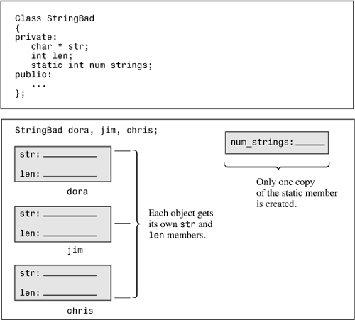
By the way, Listing 12.1 uses the num_strings member as a convenient means of illustrating static data members and as a device to point out potential programming problems. In general, a string class doesn’t need such a member.
Take a look at the implementation of the class methods in Listing 12.2. Notice how it handles using a pointer and a static member.
// strngbad.cpp -- StringBad class methods
#include <cstring> // string.h for some
#include "strngbad.h"
using std::cout;
// initializing static class member
int StringBad::num_strings = 0;
// class methods
// construct StringBad from C string
StringBad::StringBad(const char * s)
{
len = std::strlen(s); // set size
str = new char[len + 1]; // allot storage
std::strcpy(str, s); // initialize pointer
num_strings++; // set object count
cout << num_strings << ": \"" << str
<< "\" object created\n"; // For Your Information
}
StringBad::StringBad() // default constructor
{
len = 4;
str = new char[4];
std::strcpy(str, "C++"); // default string
num_strings++;
cout << num_strings << ": \"" << str
<< "\" default object created\n"; // FYI
}
StringBad::~StringBad() // necessary destructor
{
cout << "\"" << str << "\" object deleted, "; // FYI
--num_strings; // required
cout << num_strings << " left\n"; // FYI
delete [] str; // required
}
std::ostream & operator<<(std::ostream & os, const StringBad & st)
{
os << st.str;
return os;
}
First, notice the following statement from Listing 12.2:
int StringBad::num_strings = 0;
This statement initializes the static num_strings member to 0. Note that you cannot initialize a static member variable inside the class declaration. That’s because the declaration is a description of how memory is to be allocated but it doesn’t allocate memory. You allocate and initialize memory by creating an object using that format. In the case of a static class member, you initialize the static member independently, with a separate statement outside the class declaration. That’s because the static class member is stored separately rather than as part of an object. Note that the initialization statement gives the type and uses the scope operator, but it doesn’t use the static keyword.
This initialization goes in the methods file, not in the class declaration file. That’s because the class declaration is in a header file, and a program may include a header file in several other files. That would result in multiple copies of the initialization statement, which is an error.
The exception to the noninitialization of a static data member inside the class declaration (see Chapter 10, “Objects and Classes”) is if the static data member is a const of integral or enumeration type.
A static data member is declared in the class declaration and is initialized in the file containing the class methods. The scope operator is used in the initialization to indicate to which class the static member belongs. However, if the static member is a const integral type or an enumeration type, it can be initialized in the class declaration itself.
Next, notice that each constructor contains the expression num_strings++. This ensures that each time a program creates a new object, the shared variable num_strings increases by one, keeping track of the total number of String objects. Also the destructor contains the expression --num_strings. Thus, the String class also keeps track of deleted objects, keeping the value of the num_strings member current.
Now look at the first constructor in Listing 12.2, which initializes a String object with a regular C string:
StringBad::StringBad(const char * s)
{
len = std::strlen(s); // set size
str = new char[len + 1]; // allot storage
std::strcpy(str, s); // initialize pointer
num_strings++; // set object count
cout << num_strings << ": \"" << str
<< "\" object created\n"; // For Your Information
}
Recall that the class str member is just a pointer, so the constructor has to provide the memory for holding a string. You can pass a string pointer to the constructor when you initialize an object:
String boston("Boston");
The constructor must then allocate enough memory to hold the string, and then it must copy the string to that location. Let’s go through the process step-by-step.
First, the function initializes the len member, using the strlen() function to compute the length of the string. Next, it uses new to allocate sufficient space to hold the string, and then it assigns the address of the new memory to the str member. (Recall that strlen() returns the length of a string, not counting the terminating null character, so the constructor adds one to len to allow space for the string, including the null character.)
Next, the constructor uses strcpy() to copy the passed string into the new memory. Then it updates the object count. Finally, to help you monitor what’s going on, the constructor displays the current number of objects and the string stored in the object. This feature will come in handy later when we deliberately lead the Stringbad class into trouble.
To understand this approach, you should realize that the string is not stored in the object. The string is stored separately, in heap memory, and the object merely stores information that tells where to find the string.
Note that you do not use this:
str = s; // not the way to go
This merely stores the address without making a copy of the string.
The default constructor behaves similarly, except that it provides a default string of "C++".
The destructor contains the example’s most important addition to the handling of classes:
StringBad::~StringBad() // necessary destructor
{
cout << "\"" << str << "\" object deleted, "; // FYI
--num_strings; // required
cout << num_strings << " left\n"; // FYI
delete [] str; // required
}
The destructor begins by announcing when the destructor gets called. This part is informative but not essential. However, the delete statement is vital. Recall that the str member points to memory allocated with new. When a StringBad object expires, the str pointer expires. But the memory str pointed to remains allocated unless you use delete to free it. Deleting an object frees the memory occupied by the object itself, but it does not automatically free memory pointed to by pointers that were object members. For that, you must use the destructor. By placing the delete statement in the destructor, you ensure that the memory that a constructor allocates with new is freed when the object expires.
Whenever you use new in a constructor to allocate memory, you should use delete in the corresponding destructor to free that memory. If you use new [] (with brackets), then you should use delete [] (with brackets).
Listing 12.3, which is taken from a program under development at The Daily Vegetable, illustrates when and how the StringBad constructors and destructors work. The program places the object declarations within an inner block because the destructor is called when execution exits the block in which an object is defined. Without the inner block, the destructors would be called after execution exits main(), which would prevent you in some environments from seeing the destructor messages before the execution window closes. Be sure to compile Listing 12.2 along with Listing 12.3.
// vegnews.cpp -- using new and delete with classes
// compile with strngbad.cpp
#include <iostream>
using std::cout;
#include "strngbad.h"
void callme1(StringBad &); // pass by reference
void callme2(StringBad); // pass by value
int main()
{
using std::endl;
{
cout << "Starting an inner block.\n";
StringBad headline1("Celery Stalks at Midnight");
StringBad headline2("Lettuce Prey");
StringBad sports("Spinach Leaves Bowl for Dollars");
cout << "headline1: " << headline1 << endl;
cout << "headline2: " << headline2 << endl;
cout << "sports: " << sports << endl;
callme1(headline1);
cout << "headline1: " << headline1 << endl;
callme2(headline2);
cout << "headline2: " << headline2 << endl;
cout << "Initialize one object to another:\n";
StringBad sailor = sports;
cout << "sailor: " << sailor << endl;
cout << "Assign one object to another:\n";
StringBad knot;
knot = headline1;
cout << "knot: " << knot << endl;
cout << "Exiting the block.\n";
}
cout << "End of main()\n";
return 0;
}
void callme1(StringBad & rsb)
{
cout << "String passed by reference:\n";
cout << " \"" << rsb << "\"\n";
}
void callme2(StringBad sb)
{
cout << "String passed by value:\n";
cout << " \"" << sb << "\"\n";
}
This first draft of a design for StringBad has some deliberate flaws that make the exact output undefined. Some compilers I used, for example, produced versions that aborted before completing. However, although the output details may differ, the basic problems and solutions (soon to be revealed!) are the same.
Here is the output produced after compiling the program in Listing 12.3 with the Borland C++ 5.5 command-line compiler:
Starting an inner block.
1: "Celery Stalks at Midnight" object created
2: "Lettuce Prey" object created
3: "Spinach Leaves Bowl for Dollars" object created
headline1: Celery Stalks at Midnight
headline2: Lettuce Prey
sports: Spinach Leaves Bowl for Dollars
String passed by reference:
"Celery Stalks at Midnight"
headline1: Celery Stalks at Midnight
String passed by value:
"Lettuce Prey"
"Lettuce Prey" object deleted, 2 left
headline2: Dû°
Initialize one object to another:
sailor: Spinach Leaves Bowl for Dollars
Assign one object to another:
3: "C++" default object created
knot: Celery Stalks at Midnight
Exiting the block.
"Celery Stalks at Midnight" object deleted, 2 left
"Spinach Leaves Bowl for Dollars" object deleted, 1 left
"Spinach Leaves Bowl for Doll8" object deleted, 0 left
"@g" object deleted, -1 left
"-|" object deleted, -2 left
End of main()
The various nonstandard characters that appear in the output will vary from system to system; they are one of the signs that StringBad deserves to be called bad. Another sign is the negative object count. Newer compiler/operating system combinations typically abort the program just before displaying the line about having -1 objects left, and some of them report a General Protection Fault (GPF). A GPF indicates that a program tried to access a memory location forbidden to it; this is another bad sign.
The program in Listing 12.3 starts out fine, but it staggers to a strange and ultimately disastrous conclusion. Let’s begin by looking at the good parts. The constructor announces that it has created three StringBad objects, it numbers them, and the program uses the overloaded << operator to list them:
1: "Celery Stalks at Midnight" object created
2: "Lettuce Prey" object created
3: "Spinach Leaves Bowl for Dollars" object created
headline1: Celery Stalks at Midnight
headline2: Lettuce Prey
sports: Spinach Leaves Bowl for Dollars
Then the program passes headline1 to the callme1() function and redisplays headline1 after the call. Here’s the code:
callme1(headline1);
cout << "headline1: " << headline1 << endl;
And here’s the result:
String passed by reference:
"Celery Stalks at Midnight"
headline1: Celery Stalks at Midnight
This section of code seems to work fine, too.
But then the program executes the following code:
callme2(headline2);
cout << "headline2: " << headline2 << endl;
Here, callme2() passes headline2 by value instead of by reference, and the result indicates a serious problem:
String passed by value:
"Lettuce Prey"
"Lettuce Prey" object deleted, 2 left
headline2: Dû°
First, passing headline2 as a function argument somehow causes the destructor to be called. Second, although passing by value is supposed to protect the original argument from change, the function messes up the original string beyond recognition, and some nonstandard characters get displayed. (The exact text displayed will depend on what happens to sitting in memory.)
Even worse, look at the end of the output when the destructor gets called automatically for each of the objects created earlier:
Exiting the block.
"Celery Stalks at Midnight" object deleted, 2 left
"Spinach Leaves Bowl for Dollars" object deleted, 1 left
"Spinach Leaves Bowl for Doll8" object deleted, 0 left
"@g" object deleted, -1 left
"-|" object deleted, -2 left
End of main()
Because automatic storage objects are deleted in an order opposite to that in which they are created, the first three objects deleted are knots, sailor, and sport. The knots and sailor deletions look okay, but for sport, Dollars has become Doll8. The only thing the program does with sport is use it to initialize sailor, but that act appears to have altered sport. And the last two objects deleted, headline2 and headline1, are unrecognizable. Something messes up these strings before they are deleted. Also the counting is bizarre. How can there be -2 objects left?
Actually, the peculiar counting is a clue. Every object is constructed once and destroyed once, so the number of constructor calls should equal the number of destructor calls. Because the object count (num_strings) is decremented two times more than it is incremented, a constructor that doesn’t increment num_strings must be creating two objects. The class definition declares and defines two constructors (both of which increment num_strings), but it turns out that the program uses three constructors! For example, consider this line:
StringBad sailor = sports;
What constructor is used here? Not the default constructor, and not the constructor with a const char * parameter. Remember, initialization using this form is another syntax for the following:
StringBad sailor = StringBad(sports); //constructor using sports
Because sports is type StringBad, a matching constructor could have this prototype:
StringBad(const StringBad &);
And it turns out that the compiler automatically generates this constructor (called a copy constructor because it makes a copy of an object) if you initialize one object to another. The automatic version would not know about updating the num_strings static variable, so it would mess up the counting scheme. Indeed, all the problems exhibited by this example stem from member functions that the compiler generates automatically, so let’s look at that topic now.
The problems with the StringBad class stem from special member functions. These are member functions that are defined automatically. In the case of StringBad, the behavior of these member functions is inappropriate to this particular class design. In particular, C++ automatically provides the following member functions:
• A default constructor if you define no constructors
• A default destructor if you don’t define one
• A copy constructor if you don’t define one
• An assignment operator if you don’t define one
• An address operator if you don’t define one
More precisely, the compiler generates definitions for the last three items if a program uses objects in such a way as to require them. For example, if you assign one object to another, the program provides a definition for the assignment operator.
It turns out that the implicit copy constructor and the implicit assignment operator cause the StringBad class problems.
The implicit address operator returns the address of the invoking object (that is, the value of the this pointer). That’s fine for our purposes, and we won’t discuss this member function further. The default destructor does nothing, and we won’t discuss it, either, other than to point out that the class has already provided a substitute for it. But the others do warrant more discussion.
C++11 provides two more special member functions—the move constructor and the move assignment operator. Chapter 18, “Visiting with the New C++ Standard,” discusses these further.
If you fail to provide any constructors at all, C++ provides you with a default constructor. For example, suppose you define a Klunk class and omit any constructors. In this case, the compiler supplies the following default:
Klunk::Klunk() { } // implicit default constructor
That is, it supplies a constructor (the defaulted default constructor) that takes no arguments and that does nothing. It’s needed because creating an object always invokes a constructor:
Klunk lunk; // invokes default constructor
The default constructor makes lunk like an ordinary automatic variable; that is, its value at initialization is unknown.
After you define any constructor, C++ doesn’t bother to define a default constructor. If you want to create objects that aren’t initialized explicitly, you then have to define a default constructor explicitly. It’s a constructor with no arguments, but you can use it to set particular values:
Klunk::Klunk() // explicit default constructor
{
klunk_ct = 0;
...
}
A constructor with arguments still can be a default constructor if all its arguments have default values. For example, the Klunk class could have the following inline constructor:
Klunk(int n = 0) { klunk_ct = n; }
However, you can have only one default constructor. That is, you can’t do this:
Klunk() { klunk_ct = 0 } // constructor #1
Klunk(int n = 0) { klunk_ct = n; } // ambiguous constructor #2
Why is this ambiguous? Consider the following two declarations:
Klunk kar(10); // clearly matches Klunt(int n)
Klunk bus; // could match either constructor
The second declaration matches constructor #1 (no argument), but it also matches constructor #2 (using the default argument 0). This will cause the compiler to issue an error message.
A copy constructor is used to copy an object to a newly created object. That is, it’s used during initialization, including passing function arguments by value and not during ordinary assignment. A copy constructor for a class normally has this prototype:
Class_name(const Class_name &);
Note that it takes a constant reference to a class object as its argument. For example, a copy constructor for the String class would have this prototype:
StringBad(const StringBad &);
You must know two things about a copy constructor: when it’s used and what it does.
A copy constructor is invoked whenever a new object is created and initialized to an existing object of the same kind. This happens in several situations. The most obvious situation is when you explicitly initialize a new object to an existing object. For example, given that motto is a StringBad object, the following four defining declarations invoke a copy constructor:
StringBad ditto(motto); // calls StringBad(const StringBad &)
StringBad metoo = motto; // calls StringBad(const StringBad &)
StringBad also = StringBad(motto);
// calls StringBad(const StringBad &)
StringBad * pStringBad = new StringBad(motto);
// calls StringBad(const StringBad &)
Depending on the implementation, the middle two declarations may use a copy constructor directly to create metoo and also, or they may use a copy constructor to generate temporary objects whose contents are then assigned to metoo and also. The last example initializes an anonymous object to motto and assigns the address of the new object to the pstring pointer.
Less obviously, a compiler uses a copy constructor whenever a program generates copies of an object. In particular, it’s used when a function passes an object by value (as callme2() does in Listing 12.3) or when a function returns an object. Remember, passing by value means creating a copy of the original variable. A compiler also uses a copy constructor whenever it generates temporary objects. For example, a compiler might generate a temporary Vector object to hold an intermediate result when adding three Vector objects. Compilers vary as to when they generate temporary objects, but all invoke a copy constructor when passing objects by value and when returning them. In particular, this function call in Listing 12.3 invokes a copy constructor:
callme2(headline2);
The program uses a copy constructor to initialize sb, the formal StringBad-type parameter for the callme2() function.
By the way, the fact that passing an object by value involves invoking a copy constructor is a good reason for passing by reference instead. That saves the time of invoking the constructor and the space for storing the new object.
The default copy constructor performs a member-by-member copy of the nonstatic members (memberwise copying, also sometimes called shallow copying). Each member is copied by value. In Listing 12.3, the statement
StringBad sailor = sports;
amounts to the following (aside from the fact that it doesn’t compile because access to private members is not allowed):
StringBad sailor;
sailor.str = sports.str;
sailor.len = sports.len;
If a member is itself a class object, the copy constructor for that class is used to copy one member object to another. Static members, such as num_strings, are unaffected because they belong to the class as a whole instead of to individual objects. Figure 12.2 illustrates the action of an implicit copy constructor.
Figure 12.2. An inside look at memberwise copying.
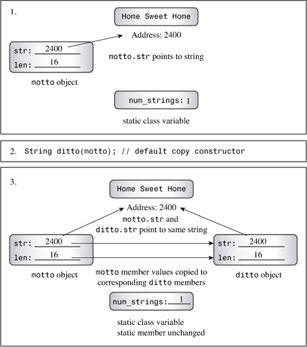
You are now in a position to understand the twofold weirdness of Listing 12.3. (Let’s assume that the output is the one shown after the listing.) The first weirdness is that the program output indicates two more objects destroyed than constructed. The explanation is that the program does create two additional objects, using the default copy constructor. The copy constructor is used to initialize the formal parameter of callme2() when that function is called, and it is used to initialize the object sailor to sports. The default copy constructor doesn’t vocalize its activities, so it doesn’t announce its creations, and it doesn’t increment the num_strings counter. However, the destructor does update the count, and it’s invoked upon the demise of all objects, regardless of how they were constructed. This weirdness is a problem because it means the program doesn’t keep an accurate object count. The solution is to provide an explicit copy constructor that does update the count:
StringBad::StringBad(const String & s)
{
num_strings++;
...// important stuff to go here
}
If your class has a static data member whose value changes when new objects are created, you should provide an explicit copy constructor that handles the accounting.
The second weirdness is the more subtle and dangerous. One symptom is the garbled string contents:
headline2: Dû°
The cause is that the implicit copy constructor copies by value. Consider Listing 12.3, for example. The effect, recall, is this:
sailor.str = sport.str;
This does not copy the string; it copies the pointer to a string. That is, after sailor is initialized to sports, you wind up with two pointers to the same string. That’s not a problem when the operator<<() function uses the pointer to display the string. It is a problem when the destructor is called. Recall that the StringBad destructor frees the memory pointed to by the str pointer. The effect of destroying sailor is this:
delete [] sailor.str; // delete the string that ditto.str points to
The sailor.str pointer points to "Spinach Leaves Bowl for Dollars" because it is assigned the value of sports.str, which points to that string. So the delete statement frees the memory occupied by the string "Spinach Leaves Bowl for Dollars".
Next, the effect of destroying sports is this:
delete [] sports.str; // effect is undefined
Here, sports.str points to the same memory location that has already been freed by the destructor for sailor, and this results in undefined, possibly harmful, behavior. In the case of Listing 12.3, the program produces mangled strings, which is usually a sign of memory mismanagement.
Another disturbing symptom is that attempting to delete the same memory twice can cause the program to abort. Microsoft Visual C++ 2010 (debug mode), for example, displays an error message window saying “Debug Assertion Failed!”, and g++ 4.4.1 on Linux reports “double free or corruption” and aborts. Other systems might provide different messages or even no message, but the same evil lurks within the programs.
The cure for the problems in the class design is to make a deep copy. That is, rather than just copy the address of the string, the copy constructor should duplicate the string and assign the address of the duplicate to the str member. That way, each object gets its own string rather than referring to another object’s string. And each call of the destructor frees a different string rather than making duplicate attempts at freeing the same string. Here’s how you can code the String copy constructor:
StringBad::StringBad(const StringBad & st)
{
num_strings++; // handle static member update
len = st.len; // same length
str = new char [len + 1]; // allot space
std::strcpy(str, st.str); // copy string to new location
cout << num_strings << ": \"" << str
<< "\" object created\n"; // For Your Information
}
What makes defining the copy constructor necessary is the fact that some class members are new-initialized pointers to data rather than the data themselves. Figure 12.3 illustrates deep copying.
Figure 12.3. An inside look at deep copying.
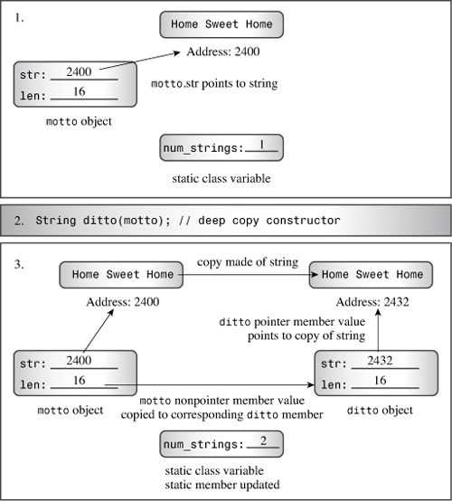
If a class contains members that are pointers initialized by new, you should define a copy constructor that copies the pointed-to data instead of copying the pointers themselves. This is termed deep copying. The alternative form of copying (memberwise, or shallow, copying) just copies pointer values. A shallow copy is just that—the shallow “scraping off” of pointer information for copying, rather than the deeper “mining” required to copy the constructs referred to by the pointers.
Stringbad Problems: Assignment OperatorsNot all the problems in Listing 12.3 can be blamed on the default copy constructor; you have to look at the default assignment operator, too. Just as ANSI C allows structure assignment, C++ allows class object assignment. It does so by automatically overloading an assignment operator for a class. This operator has the following prototype:
Class_name & Class_name::operator=(const Class_name &);
That is, it takes and returns a reference to an object of the class. For example, here’s the prototype for the StringBad class:
StringBad & StringBad::operator=(const StringBad &);
An overloaded assignment operator is used when you assign one object to another existing object:
StringBad headline1("Celery Stalks at Midnight");
...
StringBad knot;
knot = headline1; // assignment operator invoked
An assignment operator is not necessarily used when initializing an object:
StringBad metoo = knot; // use copy constructor, possibly assignment, too
Here metoo is a newly created object being initialized to knot’s values; hence, the copy constructor is used. However, as mentioned before, implementations have the option of handling this statement in two steps: using the copy constructor to create a temporary object and then using assignment to copy the values to the new object. That is, initialization always invokes a copy constructor, and forms using the = operator may also invoke an assignment operator.
Like a copy constructor, an implicit implementation of an assignment operator performs a member-to-member copy. If a member is itself an object of some class, the program uses the assignment operator defined for that class to do the copying for that particular member. Static data members are unaffected.
Stringbad Assignment Goes WrongListing 12.3 assigns headline1 to knot:
knot = headline1;
When the destructor is called for knot, it displays this message:
"Celery Stalks at Midnight" object deleted, 2 left
When the destructor is called for headline1, it displays this message:
"-|" object deleted, -2 left
(Many implementations abort before getting this far.)
Here you see the same problem that the implicit copy constructor caused: corrupted data. Once again, the problem is memberwise copying, which causes both headline1.str and knot.str to point to the same address. Thus, when the destructor is called for knot, it deletes the string "Celery Stalks at Midnight", and when it’s called for headline1, it attempts to delete the previously deleted string. As mentioned earlier, the effect of attempting to delete previously deleted data is undefined, so it may change the memory contents, and it may cause a program to abort. As some like to point out, if the effect of a particular operation is undefined, your compiler can do anything it wants, including displaying the Declaration of Independence or freeing your hard disk of unsightly files. Of course, it would be a rare thing for a compiler writer to take the time to include such frivolous or destructive behavior.
The solution for the problems created by an inappropriate default assignment operator is to provide your own assignment operator definition, one that makes a deep copy. The implementation is similar to that of the copy constructor, but there are some differences:
• Because the target object may already refer to previously allocated data, the function should use delete [] to free former obligations.
• The function should protect against assigning an object to itself; otherwise, the freeing of memory described previously could erase the object’s contents before they are reassigned.
• The function returns a reference to the invoking object.
By returning an object, the function can emulate the way ordinary assignment for built-in types can be chained. That is, if S0, S1, and S2 are StringBad objects, you can write the following:
S0 = S1 = S2;
In function notation, this becomes the following:
S0.operator=(S1.operator=(S2));
Thus, the return value of S1.operator=(S2) becomes the argument of the S0.operator=() function. Because the return value is a reference to a String object, it is the correct argument type.
Here’s how you could write an assignment operator for the StringBad class:
StringBad & StringBad::operator=(const StringBad & st)
{
if (this == &st) // object assigned to itself
return *this; // all done
delete [] str; // free old string
len = st.len;
str = new char [len + 1]; // get space for new string
std::strcpy(str, st.str); // copy the string
return *this; // return reference to invoking object
}
First, the code checks for self-assignment. It does so by seeing if the address of the right-hand side of the assignment (&s) is the same as the address of the receiving object (this). If so, the program returns *this and terminates. You may recall from Chapter 10 that the assignment operator is one of the operators that can be overloaded only by a class member function.
Otherwise, the function proceeds to free the memory that str pointed to. The reason for this is that shortly thereafter str will be assigned the address of a new string. If you don’t first apply the delete operator, the previous string will remain in memory. Because the program no longer has a pointer to the old string, that memory will be wasted.
Next, the program proceeds like a copy constructor, allocating enough space for the new string and then copying the string from the right-hand object to the new location.
When it is finished, the program returns *this and terminates.
Assignment does not create a new object, so you don’t have to adjust the value of the static data member num_strings.
Adding the copy constructor and the assignment operator described previously to the StringBad class clears up all the problems. Here, for example, are the last few lines of output after these changes have been made:
End of main()
"Celery Stalks at Midnight" object deleted, 4 left
"Spinach Leaves Bowl for Dollars" object deleted, 3 left
"Spinach Leaves Bowl for Dollars" object deleted, 2 left
"Lettuce Prey" object deleted, 1 left
"Celery Stalks at Midnight" object deleted, 0 left
The object counting is correct now, and none of the strings have been mangled.
String ClassNow that we are a bit wiser, we can revise the StringBad class, renaming it String. First, add the copy constructor and the assignment operator just discussed so that the class correctly manages the memory used by class objects. Next, now that you’ve seen when objects are constructed and destroyed, we can mute the class constructors and destructors so that they no longer announce each time they are used. Also now that you’re no longer watching the constructors at work, we can simplify the default constructor so that it constructs an empty string instead of "C++".
Next, we can add a few capabilities to the class. A useful String class would incorporate all the functionality of the standard cstring library of string functions, but we’ll add only enough to see what happens. (Keep in mind that this String class is an illustrative example and that the C++ standard string class is much more extensive.) In particular, we’ll add the following methods:
int length () const { return len; }
friend bool operator<(const String &st, const String &st2);
friend bool operator>(const String &st1, const String &st2);
friend bool operator==(const String &st, const String &st2);
friend operator>>(istream & is, String & st);
char & operator[](int i);
const char & operator[](int i) const;
static int HowMany();
The first new method returns the length of the stored string. The next three friend functions allow you to compare strings. The operator>>() function provides simple input capabilities. The two operator[]() functions provide array-notation access to individual characters in a string. The static class method HowMany() complements the static class data member num_strings. Let’s look at some details.
The new default constructor merits notice. It look likes this:
String::String()
{
len = 0;
str = new char[1];
str[0] = '\0'; // default string
}
You might wonder why the code uses
str = new char[1];
and not this:
str = new char;
Both forms allocate the same amount of memory. The difference is that the first form is compatible with the class destructor and the second is not. Recall that the destructor contains this code:
delete [] str;
Using delete [] is compatible with pointers initialized by using new [] and with the null pointer. So another possibility would be to replace
str = new char[1];
str[0] = '\0'; // default string
with this:
str = 0; // sets str to the null pointer
The effect of using delete [] with any pointers initialized any other way is undefined:
char words[15] = "bad idea";
char * p1= words;
char * p2 = new char;
char * p3;
delete [] p1; // undefined, so don't do it
delete [] p2; // undefined, so don't do it
delete [] p3; // undefined, so don't do it
Three of the methods in the String class perform comparisons. The operator<() function returns true if the first string comes before the second string alphabetically (or, more precisely, in the machine collating sequence). The simplest way to implement the string comparison functions is to use the standard strcmp() function, which returns a negative value if its first argument precedes the second alphabetically, 0 if the strings are the same, and a positive value if the first follows the second alphabetically. So you can use strcmp() like this:
bool operator<(const String &st1, const String &st2)
{
if (std::strcmp(st1.str, st2.str) < 0)
return true;
else
return false;
}
Because the built-in < operator already returns a type bool value, you can simplify the code further to this:
bool operator<(const String &st1, const String &st2)
{
return (std::strcmp(st1.str, st2.str) < 0);
}
Similarly, you can code the other two comparison functions like this:
bool operator>(const String &st1, const String &st2)
{
return st2 < st1;
}
bool operator==(const String &st1, const String &st2)
{
return (std::strcmp(st1.str, st2.str) == 0);
}
The first definition expresses the > operator in terms of the < operator and would be a good choice for an inline function.
Making the comparison functions friends facilitates comparisons between String objects and regular C strings. For example, suppose answer is a String object and that you have the following code:
if ("love" == answer)
This gets translated to the following:
if (operator==("love", answer))
The compiler then uses one of the constructors to convert the code, in effect, to this:
if (operator==(String("love"), answer))
And this matches the prototype.
With a standard C-style string, you can use brackets to access individual characters:
char city[40] = "Amsterdam";
cout << city[0] << endl; // display the letter A
In C++ the two bracket symbols constitute a single operator, the bracket operator, and you can overload this operator by using a method called operator[](). Typically, a binary C++ operator (one with two operands) puts the operator between the two operands, as in 2 + 5. But the bracket operator places one operand in front of the first bracket and the other operand between the two brackets. Thus, in the expression city[0], city is the first operand, [] is the operator, and 0 is the second operand.
Suppose that opera is a String object:
String opera("The Magic Flute");
If you use the expression opera[4], C++ looks for a method with this name and signature:
String::operator[](int i)
If it finds a matching prototype, the compiler replaces the expression opera[4] with this function call:
opera.operator[](4)
The opera object invokes the method, and the array subscript 4 becomes the function argument.
Here’s a simple implementation:
char & String::operator[](int i)
{
return str[i];
}
With this definition, the statement
cout << opera[4];
becomes this:
cout << opera.operator[4];
The return value is opera.str[4], or the character 'M'. So the public method gives access to private data.
Declaring the return type as type char & allows you to assign values to a particular element. For example, you can use the following:
String means("might");
means[0] = 'r';
The second statement is converted to an overloaded operator function call:
means.operator[][0] = 'r';
This assigns 'r' to the method’s return value. But the function returns a reference to means.str[0], making the code equivalent to
means.str[0] = 'r';
This last line of code violates private access, but because operator[]() is a class method, it is allowed to alter the array contents. The net effect of the code is that "might" becomes "right".
Suppose you have a constant object:
const String answer("futile");
Then, if the only available definition for operator[]()is the one you’ve just seen, the following code is labeled an error:
cout << answer[1]; // compile-time error
The reason is that answer is const, and the method doesn’t promise not to alter data. (In fact, sometimes the method’s job is to alter data, so it can’t promise not to.)
However, C++ distinguishes between const and non-const function signatures when overloading, so you can provide a second version of operator[]() that is used just by const String objects:
// for use with const String objects
const char & String::operator[](int i) const
{
return str[i];
}
With the definitions, you have read/write access to regular String objects and read-only access to const String data:
String text("Once upon a time");
const String answer("futile");
cout << text[1]; // ok, uses non-const version of operator[]()
cout << answer[1]; // ok, uses const version of operator[]()
cin >> text[1]; // ok, uses non-const version of operator[]()
cin >> answer[1]; // compile-time error
It’s possible to declare a member function as being static. (The keyword static should appear in the function declaration but not in the function definition if the latter is separate.) This has two important consequences.
First, a static member function doesn’t have to be invoked by an object; in fact, it doesn’t even get a this pointer to play with. If the static member function is declared in the public section, it can be invoked using the class name and the scope-resolution operator. For instance, you can give the String class a static member function called HowMany() with the following prototype/definition in the class declaration:
static int HowMany() { return num_strings; }
It could be invoked like this:
int count = String::HowMany(); // invoking a static member function
The second consequence is that because a static member function is not associated with a particular object, the only data members it can use are the static data members. For example, the HowMany() static method can access the num_strings static member, but not str or len.
Similarly, a static member function can be used to set a classwide flag that controls how some aspect of the class interface behaves. For example, it can control the formatting used by a method that displays class contents.
Before looking at the new listings for the String class example, let’s consider another matter. Suppose you want to copy an ordinary string to a String object. For example, suppose you use getline() to read a string and you want to place it in a String object. The class methods already allow you to do the following:
String name;
char temp[40];
cin.getline(temp, 40);
name = temp; // use constructor to convert type
However, this might not be a satisfactory solution if you have to do it often. To see why, let’s review how the final statement works:
1. The program uses the String(const char *) constructor to construct a temporary String object containing a copy of the string stored in temp. Remember from Chapter 11, “Working with Classes,” that a constructor with a single argument serves as a conversion function.
2. In Listing 12.6, later in this chapter, the program uses the String & String::operator=(const String &) function to copy information from the temporary object to the name object.
3. The program calls the ~String() destructor to delete the temporary object.
The simplest way to make the process more efficient is to overload the assignment operator so that it works directly with ordinary strings. This removes the extra steps of creating and destroying a temporary object. Here’s one possible implementation:
String & String::operator=(const char * s)
{
delete [] str;
len = std::strlen(s);
str = new char[len + 1];
std::strcpy(str, s);
return *this;
}
As usual, you must deallocate memory formerly managed by str and allocate enough memory for the new string.
Listing 12.4 shows the revised class declaration. In addition to the changes already mentioned, it defines the constant CINLIM, which is used in implementing operator>>().
// string1.h -- fixed and augmented string class definition
#ifndef STRING1_H_
#define STRING1_H_
#include <iostream>
using std::ostream;
using std::istream;
class String
{
private:
char * str; // pointer to string
int len; // length of string
static int num_strings; // number of objects
static const int CINLIM = 80; // cin input limit
public:
// constructors and other methods
String(const char * s); // constructor
String(); // default constructor
String(const String &); // copy constructor
~String(); // destructor
int length () const { return len; }
// overloaded operator methods
String & operator=(const String &);
String & operator=(const char *);
char & operator[](int i);
const char & operator[](int i) const;
// overloaded operator friends
friend bool operator<(const String &st, const String &st2);
friend bool operator>(const String &st1, const String &st2);
friend bool operator==(const String &st, const String &st2);
friend ostream & operator<<(ostream & os, const String & st);
friend istream & operator>>(istream & is, String & st);
// static function
static int HowMany();
};
#endif
Listing 12.5 presents the revised method definitions.
// string1.cpp -- String class methods
#include <cstring> // string.h for some
#include "string1.h" // includes <iostream>
using std::cin;
using std::cout;
// initializing static class member
int String::num_strings = 0;
// static method
int String::HowMany()
{
return num_strings;
}
// class methods
String::String(const char * s) // construct String from C string
{
len = std::strlen(s); // set size
str = new char[len + 1]; // allot storage
std::strcpy(str, s); // initialize pointer
num_strings++; // set object count
}
String::String() // default constructor
{
len = 4;
str = new char[1];
str[0] = '\0'; // default string
num_strings++;
}
String::String(const String & st)
{
num_strings++; // handle static member update
len = st.len; // same length
str = new char [len + 1]; // allot space
std::strcpy(str, st.str); // copy string to new location
}
String::~String() // necessary destructor
{
--num_strings; // required
delete [] str; // required
}
// overloaded operator methods
// assign a String to a String
String & String::operator=(const String & st)
{
if (this == &st)
return *this;
delete [] str;
len = st.len;
str = new char[len + 1];
std::strcpy(str, st.str);
return *this;
}
// assign a C string to a String
String & String::operator=(const char * s)
{
delete [] str;
len = std::strlen(s);
str = new char[len + 1];
std::strcpy(str, s);
return *this;
}
// read-write char access for non-const String
char & String::operator[](int i)
{
return str[i];
}
// read-only char access for const String
const char & String::operator[](int i) const
{
return str[i];
}
// overloaded operator friends
bool operator<(const String &st1, const String &st2)
{
return (std::strcmp(st1.str, st2.str) < 0);
}
bool operator>(const String &st1, const String &st2)
{
return st2 < st1;
}
bool operator==(const String &st1, const String &st2)
{
return (std::strcmp(st1.str, st2.str) == 0);
}
// simple String output
ostream & operator<<(ostream & os, const String & st)
{
os << st.str;
return os;
}
// quick and dirty String input
istream & operator>>(istream & is, String & st)
{
char temp[String::CINLIM];
is.get(temp, String::CINLIM);
if (is)
st = temp;
while (is && is.get() != '\n')
continue;
return is;
}
The overloaded >> operator provides a simple way to read a line of keyboard input into a String object. It assumes an input line of String::CINLIM or fewer characters and discards any characters beyond that limit. Keep in mind that the value of an istream object in an if condition evaluates to false if input fails for some reason, such as encountering an end-of-file condition, or in the case of get(char *, int), reading an empty line.
Listing 12.6 exercises the String class with a short program that lets you enter a few strings. The program has the user enter sayings, puts the strings into String objects, displays them, and reports which string is the shortest and which comes first alphabetically.
// sayings1.cpp -- using expanded String class
// compile with string1.cpp
#include <iostream>
#include "string1.h"
const int ArSize = 10;
const int MaxLen =81;
int main()
{
using std::cout;
using std::cin;
using std::endl;
String name;
cout <<"Hi, what's your name?\n>> ";
cin >> name;
cout << name << ", please enter up to " << ArSize
<< " short sayings <empty line to quit>:\n";
String sayings[ArSize]; // array of objects
char temp[MaxLen]; // temporary string storage
int i;
for (i = 0; i < ArSize; i++)
{
cout << i+1 << ": ";
cin.get(temp, MaxLen);
while (cin && cin.get() != '\n')
continue;
if (!cin || temp[0] == '\0') // empty line?
break; // i not incremented
else
sayings[i] = temp; // overloaded assignment
}
int total = i; // total # of lines read
if ( total > 0)
{
cout << "Here are your sayings:\n";
for (i = 0; i < total; i++)
cout << sayings[i][0] << ": " << sayings[i] << endl;
int shortest = 0;
int first = 0;
for (i = 1; i < total; i++)
{
if (sayings[i].length() < sayings[shortest].length())
shortest = i;
if (sayings[i] < sayings[first])
first = i;
}
cout << "Shortest saying:\n" << sayings[shortest] << endl;;
cout << "First alphabetically:\n" << sayings[first] << endl;
cout << "This program used "<< String::HowMany()
<< " String objects. Bye.\n";
}
else
cout << "No input! Bye.\n";
return 0;
}
Older versions of get(char *, int) don’t evaluate to false upon reading an empty line. For those versions, however, the first character in the string is a null character if an empty line is entered. This example uses the following code:
if (!cin || temp[0] == '\0') // empty line?
break; // i not incremented
If the implementation follows the current C++ Standard, the first test in the if statement detects an empty line, whereas the second test detects the empty line for older implementations.
The program in Listing 12.6 asks the user to enter up to 10 sayings. Each saying is read into a temporary character array and then copied to a String object. If the user enters a blank line, a break statement terminates the input loop. After echoing the input, the program uses the length() and operator<() member functions to locate the shortest string and the alphabetically earliest string. The program also uses the subscript operator ([]) to preface each saying with its initial character. Here’s a sample run:
Hi, what's your name?
>> Misty Gutz
Misty Gutz, please enter up to 10 short sayings <empty line to quit>:
1: a fool and his money are soon parted
2: penny wise, pound foolish
3: the love of money is the root of much evil
4: out of sight, out of mind
5: absence makes the heart grow fonder
6: absinthe makes the hart grow fonder
7:
Here are your sayings:
a: a fool and his money are soon parted
p: penny wise, pound foolish
t: the love of money is the root of much evil
o: out of sight, out of mind
a: absence makes the heart grow fonder
a: absinthe makes the hart grow fonder
Shortest saying:
penny wise, pound foolish
First alphabetically:
a fool and his money are soon parted
This program used 11 String objects. Bye.
new in ConstructorsBy now you’ve noticed that you must take special care when using new to initialize pointer members of an object. In particular, you should do the following:
• If you use new to initialize a pointer member in a constructor, you should use delete in the destructor.
• The uses of new and delete should be compatible. You should pair new with delete and new [] with delete [].
• If there are multiple constructors, all should use new the same way—either all with brackets or all without brackets. There’s only one destructor, so all constructors have to be compatible with that destructor. However, it is permissible to initialize a pointer with new in one constructor and with the null pointer (0, or, with C++11, nullptr) in another constructor because it’s okay to apply the delete operation (with or without brackets) to the null pointer.
• You should define a copy constructor that initializes one object to another by doing deep copying. Typically, the constructor should emulate the following example:
String::String(const String & st)
{
num_strings++; // handle static member update if necessary
len = st.len; // same length as copied string
str = new char [len + 1]; // allot space
std::strcpy(str, st.str); // copy string to new location
}
In particular, the copy constructor should allocate space to hold the copied data, and it should copy the data, not just the address of the data. Also it should update any static class members whose value would be affected by the process.
• You should define an assignment operator that copies one object to another by doing deep copying. Typically, the class method should emulate the following example:
String & String::operator=(const String & st)
{
if (this == &st) // object assigned to itself
return *this; // all done
delete [] str; // free old string
len = st.len;
str = new char [len + 1]; // get space for new string
std::strcpy(str, st.str); // copy the string
return *this; // return reference to invoking object
}
In particular, the method should check for self-assignment; it should free memory formerly pointed to by the member pointer; it should copy the data, not just the address of the data; and it should return a reference to the invoking object.
The following excerpt contains two examples of what not to do and one example of a good constructor:
String::String()
{
str = "default string"; // oops, no new []
len = std::strlen(str);
}
String::String(const char * s)
{
len = std::strlen(s);
str = new char; // oops, no []
std::strcpy(str, s); // oops, no room
}
String::String(const String & st)
{
len = st.len;
str = new char[len + 1]; // good, allocate space
std::strcpy(str, st.str); // good, copy value
}
The first constructor fails to use new to initialize str. The destructor, when called for a default object, applies delete to str. The result of applying delete to a pointer not initialized by new is undefined, but it is probably bad. Any of the following would be okay:
String::String()
{
len = 0;
str = new char[1]; // uses new with []
str[0] = '\0';
}
String::String()
{
len = 0;
str = 0; // or, with C++11, str = nullptr;
}
String::String()
{
static const char * s = "C++"; // initialized just once
len = std::strlen(s);
str = new char[len + 1]; // uses new with []
std::strcpy(str, s);
}
Next, the second constructor in the original excerpt applies new, but it fails to request the correct amount of memory; hence, new returns a block containing space for just one character. Attempting to copy a longer string to that location is asking for memory problems. Also the use of new without brackets is inconsistent with the correct form of the other constructors.
The third constructor is fine.
Finally, here’s a destructor that doesn’t work correctly with the previous constructors:
String::~String()
{
delete str; // oops, should be delete [] str;
}
The destructor uses delete incorrectly. Because the constructors request arrays of characters, the destructor should delete an array.
Suppose you use the String class, or, for that matter, the standard string class as a type for class members:
class Magazine
{
private:
String title;
string publisher;
...
};
String and string both use dynamic memory allocation. Does that mean you need to write a copy constructor and assignment operator for the Magazine class? No—at least not in itself. The default memberwise copying and assignment behavior does have some smarts. If you copy or assign one Magazine object to another, memberwise copying uses the copy constructors and assignment operators defined for the member types. That is, the String copy constructor will be used to copy the title member from one Magazine object to another, the String assignment operator will be used to assign the title member of one Magazine object to another, and so on. Things get more complicated, however, if the Magazine class needs a copy constructor and assignment operator for some other class member. In that case, those functions have to call the String and string copy constructors and assignment operators explicitly. But that’s a tale for Chapter 13, “Class Inheritance.”
When a member function or standalone function returns an object, you have choices. The function could return a reference to an object, a constant reference to an object, an object, or a constant object. By now, you’ve seen examples of all but the last, so it’s a good time to review these options.
const ObjectThe usual reason for using a const reference is efficiency, but there are restrictions on when this choice can be used. If a function returns an object that is passed to it, either by object invocation or as a method argument, you can increase the efficiency of the method by having it return a reference. For example, suppose you wanted to write a function Max() that returned the larger of two Vector objects, where Vector is the class developed in Chapter 11. The function would be used in this manner:
Vector force1(50,60);
Vector force2(10,70);
Vector max;
max = Max(force1, force2);
Either of the following two implementations would work:
// version 1
Vector Max(const Vector & v1, const Vector & v2)
{
if (v1.magval() > v2.magval())
return v1;
else
return v2;
}
// version 2
const Vector & Max(const Vector & v1, const Vector & v2)
{
if (v1.magval() > v2.magval())
return v1;
else
return v2;
}
There are three important points here. First, recall that returning an object invokes the copy constructor, whereas returning a reference doesn’t. Thus Version 2 does less work and is more efficient. Second, the reference should be to an object that exists when the calling function is executing. In this example, the reference is to either force1 or force2, and both are objects defined in the calling function, so this requirement is met. Third, both v1 and v2 are declared as being const references, so the return type has to be const to match.
const ObjectTwo common examples of returning a non-const object are overloading the assignment operator and overloading the << operator for use with cout. The first is done for reasons of efficiency, and the second for reasons of necessity.
The return value of operator=() is used for chained assignment:
String s1("Good stuff");
String s2, s3;
s3 = s2 = s1;
In this code, the return value of s2.operator=(s1) is assigned to s3. Returning either a String object or a reference to a String object would work, but, as with the Vector example, using a reference allows the function to avoid calling the String copy constructor to create a new String object. In this case, the return type is not const because the operator=() method returns a reference to s2, which it does modify.
The return value of operator<<() is used for chained output:
String s1("Good stuff");
cout << s1 << "is coming!";
Here, the return value of operator<<(cout, s1) becomes the object used to display the string "is coming!". Here, the return type has to be ostream & and not just ostream. Using an ostream return type would require calling the ostream copy constructor, and, as it turns out, the ostream class does not have a public copy constructor. Fortunately, returning a reference to cout poses no problems because cout is already in scope in the calling function.
If the object being returned is local to the called function, then it should not be returned by reference because the local object has its destructor called when the function terminates. Thus, when control returns to the calling function, there is no object left to which the reference can refer. In these circumstances, you should return an object, not a reference. Typically, overloaded arithmetic operators fall into this category. Consider this example, which uses the Vector class again:
Vector force1(50,60);
Vector force2(10,70);
Vector net;
net = force1 + force2;
The value being returned is not force1, which should be left unaltered by the process, nor force2, which should also be unaltered. Thus the return value can’t be a reference to an object that is already present in the calling function. Instead, the sum is a new, temporary object computed in Vector::operator+(), and the function shouldn’t return a reference to a temporary object either. Instead, it should return an actual vector object, not a reference:
Vector Vector::operator+(const Vector & b) const
{
return Vector(x + b.x, y + b.y);
}
There is the added expense of calling the copy constructor to create the returned object, but that is unavoidable.
One more observation: In the Vector::operator+() example, the constructor call Vector(x + b.x, y + b.y) creates an object that is accessible to the operator+() method; the implicit call to the copy constructor produced by the return statement, however, creates an object that is accessible to the calling program.
const ObjectThe preceding definition of Vector::operator+() has a bizarre property. The intended use is this:
net = force1 + force2; // 1: three Vector objects
However, the definition also allows you to use the following:
force1 + force2 = net; // 2: dyslectic programming
cout << (force1 + force2 = net).magval() << endl; // 3: demented programming
Three questions immediately arise. Why would anyone write such statements? Why are they possible? What do they do?
First, there is no sensible reason for writing such code, but not all code is written for sensible reasons. People, even programmers, make mistakes. For instance, if the comparison operator==() were defined for the Vector class, you might mistakenly type
if (force1 + force2 = net)
instead of this:
if (force1 + force2 == net)
Also programmers tend to be ingenious, and this can lead to ingeniously adventurous mistakes.
Second, this code is possible because the copy constructor constructs a temporary object to represent the return value. So in the preceding code, the expression force1 + force2 stands for that temporary object. In Statement 1, the temporary object is assigned to net. In Statements 2 and 3, net is assigned to the temporary object.
Third, the temporary object is used and then discarded. For instance, in Statement 2, the program computes the sum of force1 and force2, copies the answer into the temporary return object, overwrites the contents with the contents of net, and then discards the temporary object. The original vectors are all left unchanged. In Statement 3, the magnitude of the temporary object is displayed before the object is deleted.
If you are concerned about the potential for misuse and abuse created by this behavior, you have a simple recourse: Declare the return type as a const object. For instance, if Vector::operator+() is declared to have return type const Vector, then Statement 1 is still allowed but Statements 2 and 3 become invalid.
In summary, if a method or function returns a local object, it should return an object, not a reference. In this example, the program uses the copy constructor to generate the returned object. If a method or function returns an object of a class for which there is no public copy constructor, such as the ostream class, it must return a reference to an object. Finally, some methods and functions, such as the overloaded assignment operator, can return either an object or a reference to an object. In this example, the reference is preferred for reasons of efficiency.
C++ programs often use pointers to objects, so let’s get in a bit of practice. Listing 12.6 uses array index values to keep track of the shortest string and of the first string alphabetically. Another approach is to use pointers to point to the current leaders in these categories. Listing 12.7 implements this approach, using two pointers to String. Initially, the shortest pointer points to the first object in the array. Each time the program finds an object with a shorter string, it resets shortest to point to that object. Similarly, a first pointer tracks the alphabetically earliest string. Note that these two pointers do not create new objects; they merely point to existing objects. Hence they don’t require using new to allocate additional memory.
For variety, the program in Listing 12.7 uses a pointer that does keep track of a new object:
String * favorite = new String(sayings[choice]);
Here the pointer favorite provides the only access to the nameless object created by new. This particular syntax means to initialize the new String object by using the object sayings[choice]. That invokes the copy constructor because the argument type for the copy constructor (const String &) matches the initialization value (sayings[choice]). The program uses srand(), rand(), and time() to select a value for choice at random.
// sayings2.cpp -- using pointers to objects
// compile with string1.cpp
#include <iostream>
#include <cstdlib> // (or stdlib.h) for rand(), srand()
#include <ctime> // (or time.h) for time()
#include "string1.h"
const int ArSize = 10;
const int MaxLen = 81;
int main()
{
using namespace std;
String name;
cout <<"Hi, what's your name?\n>> ";
cin >> name;
cout << name << ", please enter up to " << ArSize
<< " short sayings <empty line to quit>:\n";
String sayings[ArSize];
char temp[MaxLen]; // temporary string storage
int i;
for (i = 0; i < ArSize; i++)
{
cout << i+1 << ": ";
cin.get(temp, MaxLen);
while (cin && cin.get() != '\n')
continue;
if (!cin || temp[0] == '\0') // empty line?
break; // i not incremented
else
sayings[i] = temp; // overloaded assignment
}
int total = i; // total # of lines read
if (total > 0)
{
cout << "Here are your sayings:\n";
for (i = 0; i < total; i++)
cout << sayings[i] << "\n";
// use pointers to keep track of shortest, first strings
String * shortest = &sayings[0]; // initialize to first object
String * first = &sayings[0];
for (i = 1; i < total; i++)
{
if (sayings[i].length() < shortest->length())
shortest = &sayings[i];
if (sayings[i] < *first) // compare values
first = &sayings[i]; // assign address
}
cout << "Shortest saying:\n" << * shortest << endl;
cout << "First alphabetically:\n" << * first << endl;
srand(time(0));
int choice = rand() % total; // pick index at random
// use new to create, initialize new String object
String * favorite = new String(sayings[choice]);
cout << "My favorite saying:\n" << *favorite << endl;
delete favorite;
}
else
cout << "Not much to say, eh?\n";
cout << "Bye.\n";
return 0;
}
Here’s a sample run of the program in Listing 12.7:
Hi, what's your name?
>> Kirt Rood
Kirt Rood, please enter up to 10 short sayings <empty line to quit>:
1: a friend in need is a friend indeed
2: neither a borrower nor a lender be
3: a stitch in time saves nine
4: a niche in time saves stine
5: it takes a crook to catch a crook
6: cold hands, warm heart
7:
Here are your sayings:
a friend in need is a friend indeed
neither a borrower nor a lender be
a stitch in time saves nine
a niche in time saves stine
it takes a crook to catch a crook
cold hands, warm heart
Shortest saying:
cold hands, warm heart
First alphabetically:
a friend in need is a friend indeed
My favorite saying:
a stitch in time saves nine
Bye
Because the program selects the favorite saying randomly, different runs of the program will show different choices, even for identical input.
new and deleteNote that the program generated from Listings 12.4, 12.5, and 12.7 uses new and delete on two levels. First, it uses new to allocate storage space for the name strings for each object that is created. This happens in the constructor functions, so the destructor function uses delete to free that memory. Because each string is an array of characters, the destructor uses delete with brackets. Thus, memory used to store the string contents is freed automatically when an object is destroyed. Second, the code in Listing 12.7 uses new to allocate an entire object:
String * favorite = new String(sayings[choice]);
This allocates space not for the string to be stored but for the object—that is, for the str pointer that holds the address of the string and for the len member. (It does not allocate space for the num_strings member because it is a static member that is stored separately from the objects.) Creating the object, in turn, calls the constructor, which allocates space for storing the string and assigns the string’s address to str. The program then uses delete to delete this object when it is finished with it. The object is a single object, so the program uses delete without brackets. Again, this frees only the space used to hold the str pointer and the len member. It doesn’t free the memory used to hold the string str points to, but the destructor takes care of that final task (see Figure 12.4).
Figure 12.4. Calling destructors.
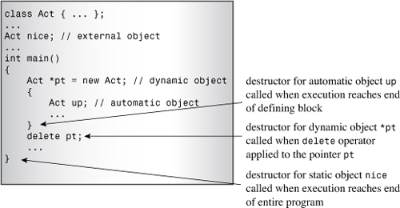
Again, destructors are called in the following situations (refer to Figure 12.4):
• If an object is an automatic variable, the object’s destructor is called when the program exits the block in which the object is defined. Thus, in Listing 12.3 the destructor is called for headlines[0] and headlines[1] when the program exits main(), and the destructor for grub is called when the program exits callme1().
• If an object is a static variable (external, static, static external, or from a namespace), its destructor is called when the program terminates. This is what happened for the sports object in Listing 12.3.
• If an object is created by new, its destructor is called only when you explicitly use delete on the object.
You should note several points about using pointers to objects (refer to Figure 12.5 for a summary):
• You declare a pointer to an object by using the usual notation:
String * glamour;
• You can initialize a pointer to point to an existing object:
String * first = &sayings[0];
• You can initialize a pointer by using new. The following creates a new object:
String * favorite = new String(sayings[choice]);
Also see Figure 12.6 for a more detailed look at an example of initializing a pointer with new.
• Using new with a class invokes the appropriate class constructor to initialize the newly created object:
// invokes default constructor
String * gleep = new String;
// invokes the String(const char *) constructor
String * glop = new String("my my my");
// invokes the String(const String &) constructor
String * favorite = new String(sayings[choice]);
• You use the -> operator to access a class method via a pointer:
if (sayings[i].length() < shortest->length())
• You apply the dereferencing operator (*) to a pointer to an object to obtain an object:
if (sayings[i] < *first) // compare object values
first = &sayings[i]; // assign object address
Figure 12.5. Pointers and objects.
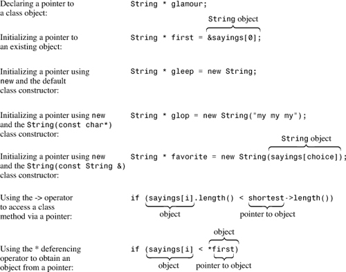
Figure 12.6. Creating an object with new.
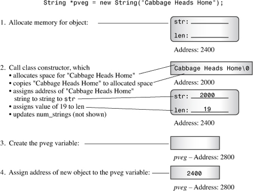
newRecall that placement new allows you to specify the memory location used to allocate memory. Chapter 9, “Memory Models and Namespaces,” discusses placement new in the context of built-in types. Using placement new with objects adds some new twists. Listing 12.8 uses placement new along with regular new to allocate memory for objects. It defines a class with a chatty constructor and destructor so that you can follow the history of objects.
// placenew1.cpp -- new, placement new, no delete
#include <iostream>
#include <string>
#include <new>
using namespace std;
const int BUF = 512;
class JustTesting
{
private:
string words;
int number;
public:
JustTesting(const string & s = "Just Testing", int n = 0)
{words = s; number = n; cout << words << " constructed\n"; }
~JustTesting() { cout << words << " destroyed\n";}
void Show() const { cout << words << ", " << number << endl;}
};
int main()
{
char * buffer = new char[BUF]; // get a block of memory
JustTesting *pc1, *pc2;
pc1 = new (buffer) JustTesting; // place object in buffer
pc2 = new JustTesting("Heap1", 20); // place object on heap
cout << "Memory block addresses:\n" << "buffer: "
<< (void *) buffer << " heap: " << pc2 <<endl;
cout << "Memory contents:\n";
cout << pc1 << ": ";
pc1->Show();
cout << pc2 << ": ";
pc2->Show();
JustTesting *pc3, *pc4;
pc3 = new (buffer) JustTesting("Bad Idea", 6);
pc4 = new JustTesting("Heap2", 10);
cout << "Memory contents:\n";
cout << pc3 << ": ";
pc3->Show();
cout << pc4 << ": ";
pc4->Show();
delete pc2; // free Heap1
delete pc4; // free Heap2
delete [] buffer; // free buffer
cout << "Done\n";
return 0;
}
The program in Listing 12.8 uses new to create a memory buffer of 512 bytes. It then uses new to create two objects of type JustTesting on the heap and attempts to use placement new to create two objects of type JustTesting in the memory buffer. Finally, it uses delete to free the memory allocated by new. Here is the output:
Just Testing constructed
Heap1 constructed
Memory block addresses:
buffer: 00320AB0 heap: 00320CE0
Memory contents:
00320AB0: Just Testing, 0
00320CE0: Heap1, 20
Bad Idea constructed
Heap2 constructed
Memory contents:
00320AB0: Bad Idea, 6
00320EC8: Heap2, 10
Heap1 destroyed
Heap2 destroyed
Done
As usual, the formatting and exact values for the memory addresses will vary from system to system.
There are a couple problems with placement new as used in Listing 12.8. First, when creating a second object, placement new simply overwrites the same location used for the first object with a new object. Not only is this rude, it means that the destructor was never called for the first object. This, of course, would create real problems if, say, the class used dynamic memory allocation for its members.
Second, using delete with pc2 and pc4 automatically invokes the destructors for the two objects that pc2 and pc4 point to. But using delete [] with buffer does not invoke the destructors for the objects created with placement new.
One lesson to be learned here is the same lesson you learned in Chapter 9: It’s up to you to manage the memory locations in a buffer that placement new populates. To use two different locations, you provide two different addresses within the buffer, making sure that the locations don’t overlap. You can, for example, use this:
pc1 = new (buffer) JustTesting;
pc3 = new (buffer + sizeof (JustTesting)) JustTesting("Better Idea", 6);
Here the pointer pc3 is offset from pc1 by the size of a JustTesting object.
The second lesson to be learned here is that if you use placement new to store objects, you need to arrange for their destructors to be called. But how? For objects created on the heap, you can use this:
delete pc2; // delete object pointed to by pc2
delete pc1; // delete object pointed to by pc1? NO!
delete pc3; // delete object pointed to by pc3? NO!
The reason is that delete works in conjunction with new but not with placement new. The pointer pc3, for example, does not receive an address returned by new, so delete pc3 throws a runtime error. The pointer pc1, on the other hand, has the same numeric value as buffer, but buffer is initialized using new [], so it’s freed using delete [], not delete. Even if buffer were initialized by new instead of new [], delete pc1 would free buffer, not pc1. That’s because the new/delete system knows about the 256-byte block that is allocated, but it doesn’t know anything about what placement new does with the block.
Note that the program does free the buffer:
delete [] buffer; // free buffer
As this comment suggests, delete [] buffer; deletes the entire block of memory allocated by new. But it doesn’t call the destructors for any objects that placement new constructs in the block. You can tell this is so because this program uses chatty destructors, which report the demise of "Heap1" and "Heap2" but which remain silent about "Just Testing" and "Bad Idea".
The solution to this quandary is that you must call the destructor explicitly for any object created by placement new. Normally, destructors are called automatically; this is one of the rare cases that require an explicit call. An explicit call to a destructor requires identifying the object to be destroyed. Because there are pointers to the objects, you can use these pointers:
pc3->~JustTesting(); // destroy object pointed to by pc3
pc1->~JustTesting(); // destroy object pointed to by pc1
Listing 12.9 fixes Listing 12.8 by managing memory locations used by placement new and by adding appropriate uses of delete and of explicit destructor calls. One important fact is the proper order of deletion. The objects constructed by placement new should be destroyed in order opposite that in which they were constructed. The reason is that, in principle, a later object might have dependencies on an earlier object. And the buffer used to hold the objects should be freed only after all the contained objects are destroyed.
// placenew2.cpp -- new, placement new, no delete
#include <iostream>
#include <string>
#include <new>
using namespace std;
const int BUF = 512;
class JustTesting
{
private:
string words;
int number;
public:
JustTesting(const string & s = "Just Testing", int n = 0)
{words = s; number = n; cout << words << " constructed\n"; }
~JustTesting() { cout << words << " destroyed\n";}
void Show() const { cout << words << ", " << number << endl;}
};
int main()
{
char * buffer = new char[BUF]; // get a block of memory
JustTesting *pc1, *pc2;
pc1 = new (buffer) JustTesting; // place object in buffer
pc2 = new JustTesting("Heap1", 20); // place object on heap
cout << "Memory block addresses:\n" << "buffer: "
<< (void *) buffer << " heap: " << pc2 <<endl;
cout << "Memory contents:\n";
cout << pc1 << ": ";
pc1->Show();
cout << pc2 << ": ";
pc2->Show();
JustTesting *pc3, *pc4;
// fix placement new location
pc3 = new (buffer + sizeof (JustTesting))
JustTesting("Better Idea", 6);
pc4 = new JustTesting("Heap2", 10);
cout << "Memory contents:\n";
cout << pc3 << ": ";
pc3->Show();
cout << pc4 << ": ";
pc4->Show();
delete pc2; // free Heap1
delete pc4; // free Heap2
// explicitly destroy placement new objects
pc3->~JustTesting(); // destroy object pointed to by pc3
pc1->~JustTesting(); // destroy object pointed to by pc1
delete [] buffer; // free buffer
cout << "Done\n";
return 0;
}
Here is the output of the program in Listing 12.9:
Just Testing constructed
Heap1 constructed
Memory block addresses:
buffer: 00320AB0 heap: 00320CE0
Memory contents:
00320AB0: Just Testing, 0
00320CE0: Heap1, 20
Better Idea constructed
Heap2 constructed
Memory contents:
00320AD0: Better Idea, 6
00320EC8: Heap2, 10
Heap1 destroyed
Heap2 destroyed
Better Idea destroyed
Just Testing destroyed
Done
The program in Listing 12.9 places the two placement new objects in adjacent location and calls the proper destructors.
By now, you’ve encountered several programming techniques for dealing with various class-related problems, and you may be having trouble keeping track of all of them. So the following sections summarize several techniques and when they are used.
<< OperatorTo redefine the << operator so that you use it with cout to display an object’s contents, you define a friend operator function that has the following form:
ostream & operator<<(ostream & os, const c_name & obj)
{
os << ... ; // display object contents
return os;
}
Here c_name represents the name of the class. If the class provides public methods that return the required contents, you can use those methods in the operator function and dispense with the friend status.
To convert a single value to a class type, you create a class constructor that has the following prototype:
c_name(type_name value);
Here c_name represents the class name, and type_name represents the name of the type you want to convert.
To convert a class type to some other type, you create a class member function that has the following prototype:
operator type_name();
Although this function has no declared return type, it should return a value of the desired type.
Remember to use conversion functions with care. You can use the keyword explicit when declaring a constructor to prevent it from being used for implicit conversions.
newYou need to take several precautions when designing classes that use the new operator to allocate memory pointed to by a class member (yes, we summarized these precautions recently, but the rules are very important to remember, particularly because the compiler does not know them and thus won’t catch your mistakes):
• Any class member that points to memory allocated by new should have the delete operator applied to it in the class destructor. This frees the allocated memory.
• If a destructor frees memory by applying delete to a pointer that is a class member, every constructor for that class should initialize that pointer, either by using new or by setting the pointer to the null pointer.
• Constructors should settle on using either new [] or new, but not a mixture of both. The destructor should use delete [] if the constructors use new [], and it should use delete if the constructors use new.
• You should define a copy constructor that allocates new memory rather than copying a pointer to existing memory. This enables a program to initialize one class object to another. The constructor should normally have the following prototype:
className(const className &)
• You should define a class member function that overloads the assignment operator and that has a function definition with the following prototype (where c_pointer is a member of the c_name class and has the type pointer-to-type_name). The following example assumes that the constructors initialize the variable c_pointer by using new []:
c_name & c_name::operator=(const c_name & cn)
{
if (this == & cn)
return *this; // done if self-assignment
delete [] c_pointer;
// set size number of type_name units to be copied
c_pointer = new type_name[size];
// then copy data pointed to by cn.c_pointer to
// location pointed to by c_pointer
...
return *this;
}
Let’s apply your improved understanding of classes to a programming problem. The Bank of Heather wants to open an automatic teller machine (ATM) in the Food Heap supermarket. The Food Heap management is concerned about lines at the ATM interfering with traffic flow in the market and may want to impose a limit on the number of people allowed to line up at the ATM. The Bank of Heather people want estimates of how long customers will have to wait in line. Your task is to prepare a program that simulates the situation so that management can see what the effect of the ATM might be.
A rather natural way of representing the problem is to use a queue of customers. A queue is an abstract data type (ADT) that holds an ordered sequence of items. New items are added to the rear of the queue, and items can be removed from the front. A queue is a bit like a stack, except that a stack has additions and removals at the same end. This makes a stack a LIFO (last in, first out) structure, whereas the queue is a FIFO (first in, first out) structure. Conceptually, a queue is like a line at a checkout stand or an ATM, so it’s ideally suited to the task. So one part of the project is to define a Queue class. (In Chapter 16, you’ll read about the Standard Template Library queue class, but you’ll learn more by developing your own than by just reading about such a class.)
The items in the queue will be customers. A Bank of Heather representative tells you that, on average, a third of the customers will take one minute to be processed, a third will take two minutes, and a third will take three minutes. Furthermore, customers arrive at random intervals, but the average number of customers per hour is fairly constant. Two more parts of your project will be to design a class representing customers and to put together a program that simulates the interactions between customers and the queue (see Figure 12.7).
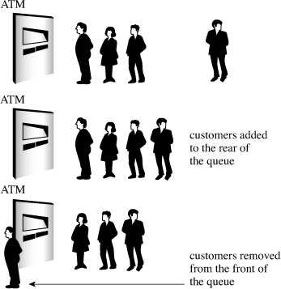
The first order of business is to design a Queue class. First, you need to list the attributes of the kind of queue you’ll need:
• A queue holds an ordered sequence of items.
• A queue has a limit on the number of items it can hold.
• You should be able to create an empty queue.
• You should be able to check whether a queue is empty.
• You should be able to check whether a queue is full.
• You should be able to add an item to the end of a queue.
• You should be able to remove an item from the front of a queue.
• You should be able to determine the number of items in the queue.
As usual when designing a class, you need to develop a public interface and a private implementation.
The queue attributes listed in the preceding section suggest the following public interface for a queue class:
class Queue
{
enum {Q_SIZE = 10};
private:
// private representation to be developed later
public:
Queue(int qs = Q_SIZE); // create queue with a qs limit
~Queue();
bool isempty() const;
bool isfull() const;
int queuecount() const;
bool enqueue(const Item &item); // add item to end
bool dequeue(Item &item); // remove item from front
};
The constructor creates an empty queue. By default, the queue can hold up to 10 items, but that can be overridden with an explicit initialization argument:
Queue line1; // queue with 10-item limit
Queue line2(20); // queue with 20-item limit
When using the queue, you can use a typedef to define Item. (In Chapter 14, “Reusing Code in C++,” you’ll learn how to use class templates instead.)
After you determine the interface, you can implement it. First, you have to decide how to represent the queue data. One approach is to use new to dynamically allocate an array with the required number of elements. However, arrays aren’t a good match to queue operations. For example, removing an item from the front of the array should be followed up by shifting every remaining element one unit closer to the front. Otherwise, you need to do something more elaborate, such as treat the array as circular. Using a linked list, however, is a reasonable fit to the requirements of a queue. A linked list consists of a sequence of nodes. Each node contains the information to be held in the list, plus a pointer to the next node in the list. For the queue in this example, each data part is a type Item value, and you can use a structure to represent a node:
struct Node
{
Item item; // data stored in the node
struct Node * next; // pointer to next node
};
Figure 12.8 illustrates a linked list.
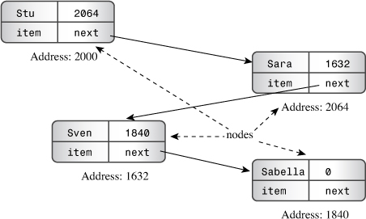
The example shown in Figure 12.8 is called a singly linked list because each node has a single link, or pointer, to another node. If you have the address of the first node, you can follow the pointers to each subsequent node in the list. Commonly, the pointer in the last node in the list is set to NULL (or, equivalently, to 0) to indicate that there are no further nodes. With C++11, you should use the new nullptr keyword. To keep track of a linked list, you must know the address of the first node. You can use a data member of the Queue class to point to the beginning of the list. In principle, that’s all the information you need because you can trace down the chain of nodes to find any other node. However, because a queue always adds a new item to the end of the queue, it is convenient to have a data member point to the last node, too (see Figure 12.9). In addition, you can use data members to keep track of the maximum number of items allowed in the queue and of the current number of items. Thus, the private part of the class declaration can look like this:
class Queue
{
private:
// class scope definitions
// Node is a nested structure definition local to this class
struct Node { Item item; struct Node * next;};
enum {Q_SIZE = 10};
// private class members
Node * front; // pointer to front of Queue
Node * rear; // pointer to rear of Queue
int items; // current number of items in Queue
const int qsize; // maximum number of items in Queue
...
public:
//...
};
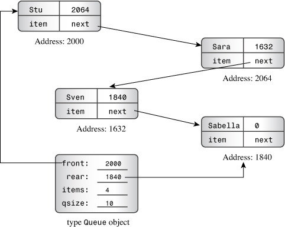
The declaration uses the C++ ability to nest a structure or class declaration inside a class. By placing the Node declaration inside the Queue class, you give it class scope. That is, Node is a type that you can use to declare class members and as a type name in class methods, but the type is restricted to the class. That way, you don’t have to worry about this declaration of Node conflicting with some global declaration or with a Node declared inside some other class. Some obsolescent compilers do not support nested structures and classes. If yours doesn’t, then you have to define a Node structure globally, giving it file scope.
After you settle on a data representation, the next step is to code the class methods.
A class constructor should provide values for the class members. Because the queue in this example begins in an empty state, you should set the front and rear pointers to NULL (or 0 or nullptr) and items to 0. Also you should set the maximum queue size qsize to the constructor argument qs. Here’s an implementation that does not work:
Queue::Queue(int qs)
{
front = rear = NULL;
items = 0;
qsize = qs; // not acceptable!
}
The problem is that qsize is a const, so it can be initialized to a value, but it can’t be assigned a value. Conceptually, calling a constructor creates an object before the code within the brackets is executed. Thus, calling the Queue(int qs) constructor causes the program to first allocate space for the four member variables. Then program flow enters the brackets and uses ordinary assignment to place values into the allocated space. Therefore, if you want to initialize a const data member, you have to do so when the object is created before execution reaches the body of the constructor. C++ provides a special syntax for doing just that. It’s called a member initializer list. The member initializer list consists of a comma-separated list of initializers preceded by a colon. It’s placed after the closing parenthesis of the argument list and before the opening bracket of the function body. If a data member is named mdata and if it’s to be initialized to the value val, the initializer has the form mdata(val). Using this notation, you can write the Queue constructor like this:
Queue::Queue(int qs) : qsize(qs) // initialize qsize to qs
{
front = rear = NULL;
items = 0;
}
In general, the initial value can involve constants and arguments from the constructor’s argument list. The technique is not limited to initializing constants; you can also write the Queue constructor like this:
Queue::Queue(int qs) : qsize(qs), front(NULL), rear(NULL), items(0)
{
}
Only constructors can use this initializer-list syntax. As you’ve seen, you have to use this syntax for const class members. You also have to use it for class members that are declared as references:
class Agency {...};
class Agent
{
private:
Agency & belong; // must use initializer list to initialize
...
};
Agent::Agent(Agency & a) : belong(a) {...}
That’s because references, like const data, can be initialized only when created. For simple data members, such as front and items, it doesn’t make much difference whether you use a member initializer list or use assignment in the function body. As you’ll see in Chapter 14, however, it’s more efficient to use the member initializer list for members that are themselves class objects.
You can’t use the member initializer list syntax with class methods other than constructors.
The parenthesized form used in the member initializer list can be used in ordinary initializations, too. That is, if you like, you can replace code such as
int games = 162;
double talk = 2.71828;
with
int games(162);
double talk(2.71828);
This allows initializing built-in types to look like initializing class objects.
The code for isempty(), isfull(), and queuecount() is simple. If items is 0, the queue is empty. If items is qsize, the queue is full. Returning the value of items answers the question of how many items are in the queue. You’ll see the code later this chapter in Listing 12.11.
Adding an item to the rear of the queue (enqueuing) is more involved. Here is one approach:
bool Queue::enqueue(const Item & item)
{
if (isfull())
return false;
Node * add = new Node; // create node
// on failure, new throws std::bad_alloc exception
add->item = item; // set node pointers
add->next = NULL; // or nullptr;
items++;
if (front == NULL) // if queue is empty,
front = add; // place item at front
else
rear->next = add; // else place at rear
rear = add; // have rear point to new node
return true;
}
In brief, the method goes through the following phases (see Figure 12.10):
1. Terminate if the queue is already full. (For this implementation, the maximum size is selected by the user via the constructor.)
2. Create a new node. If new can’t do so, it throws an exception, which is a topic taken up in Chapter 15, “Friends, Exceptions, and More.” The practical upshot is that unless one provides additional programming to handle the exception, the program terminates.
3. Place proper values into the node. In this case, the code copies an Item value into the data part of the node and sets the node’s next pointer to NULL (or 0 or, in C++11, nullptr). This prepares the node to be the last item in the queue.
4. Increase the item count (items) by one.
5. Attach the node to the rear of the queue. There are two parts to this process. The first is linking the node to the other nodes in the list. This is done by having the next pointer of the currently rear node point to the new rear node. The second part is to set the Queue member pointer rear to point to the new node so that the queue can access the last node directly. If the queue is empty, you must also set the front pointer to point to the new node. (If there’s just one node, it’s both the front and the rear node.)
Figure 12.10. Enqueuing an item.
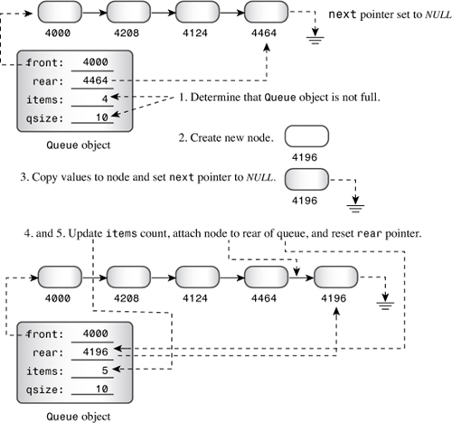
Removing an item from the front of the queue (dequeuing) also has several steps. Here is one approach:
bool Queue::dequeue(Item & item)
{
if (front == NULL)
return false;
item = front->item; // set item to first item in queue
items--;
Node * temp = front; // save location of first item
front = front->next; // reset front to next item
delete temp; // delete former first item
if (items == 0)
rear = NULL;
return true;
}
In brief, the method goes through the following phases (see Figure 12.11):
1. Terminate if the queue is already empty.
2. Provide the first item in the queue to the calling function. This is accomplished by copying the data portion of the current front node into the reference variable passed to the method.
3. Decrease the item count (items) by one.
4. Save the location of the front node for later deletion.
5. Take the node off the queue. This is accomplished by setting the Queue member pointer front to point to the next node, whose address is provided by front->next.
6. To conserve memory, delete the former first node.
7. If the list is now empty, set rear to NULL. (The front pointer would already be NULL in this case, after setting front->next.) Again, you can use 0 instead of NULL, or, with C++11, you can use nullptr.
Figure 12.11. Dequeuing an item.
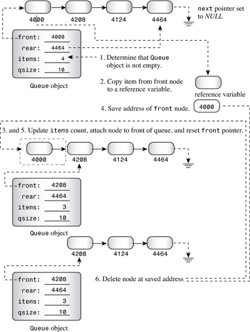
Step 4 is necessary because step 5 erases the queue’s memory of where the former first node is.
Do you need any more methods? The class constructor doesn’t use new, so at first glance, it may appear that you don’t have to worry about the special requirements of classes that do use new in the constructors. Of course, that first glance is misleading because adding objects to a queue does invoke new to create new nodes. It’s true that the dequeue() method cleans up by deleting nodes, but there’s no guarantee that a queue will be empty when it expires. Therefore, the class does require an explicit destructor—one that deletes all remaining nodes. Here’s an implementation that starts at the front of the list and deletes each node in turn:
Queue::~Queue()
{
Node * temp;
while (front != NULL) // while queue is not yet empty
{
temp = front; // save address of front item
front = front->next;// reset pointer to next item
delete temp; // delete former front
}
}
Hmmm. You’ve seen that classes that use new usually require explicit copy constructors and assignment operators that do deep copying. Is that the case here? The first question to answer is, “Does the default memberwise copying do the right thing?” The answer is no. Memberwise copying of a Queue object would produce a new object that points to the front and rear of the same linked list as the original. Thus, adding an item to the copy Queue object changes the shared linked list. That’s bad enough. What’s worse is that only the copy’s rear pointer gets updated, essentially corrupting the list from the standpoint of the original object. Clearly, then, cloning or copying queues requires providing a copy constructor and an assignment constructor that do deep copying.
Of course, that raises the question of why you would want to copy a queue. Well, perhaps you would want to save snapshots of a queue during different stages of a simulation. Or you would like to provide identical input to two different strategies. Actually, it might be useful to have operations that split a queue, the way supermarkets sometimes do when opening an additional checkout stand. Similarly, you might want to combine two queues into one or truncate a queue.
But suppose you don’t want to do any of these things in this simulation. Can’t you simply ignore those concerns and use the methods you already have? Of course you can. However, at some time in the future, you might need to use a queue again, but with copying. And you might forget that you failed to provide proper code for copying. In that case, your programs will compile and run, but they will generate puzzling results and crashes. So it would seem that it’s best to provide a copy constructor and an assignment operator, even though you don’t need them now.
Fortunately, there is a sneaky way to avoid doing this extra work while still protecting against future program crashes. The idea is to define the required methods as dummy private methods:
class Queue
{
private:
Queue(const Queue & q) : qsize(0) { } // preemptive definition
Queue & operator=(const Queue & q) { return *this;}
//...
};
This has two effects. First, it overrides the default method definitions that otherwise would be generated automatically. Second, because these methods are private, they can’t be used by the world at large. That is, if nip and tuck are Queue objects, the compiler won’t allow the following:
Queue snick(nip); // not allowed
tuck = nip; // not allowed
Therefore, instead of being faced with mysterious runtime malfunctions in the future, you’ll get an easier-to-trace compiler error, stating that these methods aren’t accessible. Also this trick is useful when you define a class whose objects really should not be copied.
C++11 provides an alternative way to disable a method by using the keyword delete; Chapter 18 returns to this topic.
Are there any other effects to note? Yes. Recall that a copy constructor is invoked when objects are passed (or returned) by value. However, this is no problem if you follow the preferred practice of passing objects as references. Also a copy constructor is used to create other temporary objects. But the Queue definition lacks operations that lead to temporary objects, such as overloading the addition operator.
Customer ClassAt this point, we need to design a customer class. In general, an ATM customer has many properties, such as a name, account numbers, and account balances. However, the only properties you need for the simulation are when a customer joins the queue and the time required for the customer’s transaction. When the simulation produces a new customer, the program should create a new customer object, storing in it the customer’s time of arrival and a randomly generated value for the transaction time. When the customer reaches the front of the queue, the program should note the time and subtract the queue-joining time to get the customer’s waiting time. Here’s how you can define and implement the Customer class:
class Customer
{
private:
long arrive; // arrival time for customer
int processtime; // processing time for customer
public:
Customer() { arrive = processtime = 0; }
void set(long when);
long when() const { return arrive; }
int ptime() const { return processtime; }
};
void Customer::set(long when)
{
processtime = std::rand() % 3 + 1;
arrive = when;
}
The default constructor creates a null customer. The set() member function sets the arrival time to its argument and randomly picks a value from 1 through 3 for the processing time.
Listing 12.10 gathers together the Queue and Customer class declarations, and Listing 12.11 provides the methods.
// queue.h -- interface for a queue
#ifndef QUEUE_H_
#define QUEUE_H_
// This queue will contain Customer items
class Customer
{
private:
long arrive; // arrival time for customer
int processtime; // processing time for customer
public:
Customer() { arrive = processtime = 0; }
void set(long when);
long when() const { return arrive; }
int ptime() const { return processtime; }
};
typedef Customer Item;
class Queue
{
private:
// class scope definitions
// Node is a nested structure definition local to this class
struct Node { Item item; struct Node * next;};
enum {Q_SIZE = 10};
// private class members
Node * front; // pointer to front of Queue
Node * rear; // pointer to rear of Queue
int items; // current number of items in Queue
const int qsize; // maximum number of items in Queue
// preemptive definitions to prevent public copying
Queue(const Queue & q) : qsize(0) { }
Queue & operator=(const Queue & q) { return *this;}
public:
Queue(int qs = Q_SIZE); // create queue with a qs limit
~Queue();
bool isempty() const;
bool isfull() const;
int queuecount() const;
bool enqueue(const Item &item); // add item to end
bool dequeue(Item &item); // remove item from front
};
#endif
// queue.cpp -- Queue and Customer methods
#include "queue.h"
#include <cstdlib> // (or stdlib.h) for rand()
// Queue methods
Queue::Queue(int qs) : qsize(qs)
{
front = rear = NULL; // or nullptr
items = 0;
}
Queue::~Queue()
{
Node * temp;
while (front != NULL) // while queue is not yet empty
{
temp = front; // save address of front item
front = front->next;// reset pointer to next item
delete temp; // delete former front
}
}
bool Queue::isempty() const
{
return items == 0;
}
bool Queue::isfull() const
{
return items == qsize;
}
int Queue::queuecount() const
{
return items;
}
// Add item to queue
bool Queue::enqueue(const Item & item)
{
if (isfull())
return false;
Node * add = new Node; // create node
// on failure, new throws std::bad_alloc exception
add->item = item; // set node pointers
add->next = NULL; // or nullptr;
items++;
if (front == NULL) // if queue is empty,
front = add; // place item at front
else
rear->next = add; // else place at rear
rear = add; // have rear point to new node
return true;
}
// Place front item into item variable and remove from queue
bool Queue::dequeue(Item & item)
{
if (front == NULL)
return false;
item = front->item; // set item to first item in queue
items--;
Node * temp = front; // save location of first item
front = front->next; // reset front to next item
delete temp; // delete former first item
if (items == 0)
rear = NULL;
return true;
}
// customer method
// when is the time at which the customer arrives
// the arrival time is set to when and the processing
// time set to a random value in the range 1 - 3
void Customer::set(long when)
{
processtime = std::rand() % 3 + 1;
arrive = when;
}
You now have the tools needed for the ATM simulation. The program should allow the user to enter three quantities: the maximum queue size, the number of hours the program will simulate, and the average number of customers per hour. The program should use a loop in which each cycle represents one minute. During each minute cycle, the program should do the following:
1. Determine whether a new customer has arrived. If so, add the customer to the queue if there is room; otherwise, turn the customer away.
2. If no one is being processed, take the first person from the queue. Determine how long the person has been waiting and set a wait_time counter to the processing time that the new customer will need.
3. If a customer is being processed, decrement the wait_time counter by one minute.
4. Track various quantities, such as the number of customers served, the number of customers turned away, cumulative time spent waiting in line, and cumulative queue length.
When the simulation cycle is finished, the program should report various statistical findings.
An interesting matter is how the program determines whether a new customer has arrived. Suppose that on average, 10 customers arrive per hour. That amounts to a customer every 6 minutes. The program computes and stores that value in the variable min_per_cust. However, having a customer show up exactly every 6 minutes is unrealistic. What you really want (at least most of the time) is a more random process that averages to a customer every 6 minutes. The program uses this function to determine whether a customer shows up during a cycle:
bool newcustomer(double x)
{
return (std::rand() * x / RAND_MAX < 1);
}
Here’s how it works. The value RAND_MAX is defined in the cstdlib file (formerly stdlib.h) and represents the largest value the rand() function can return (0 is the lowest value). Suppose that x, the average time between customers, is 6. Then the value of rand() * x / RAND_MAX will be somewhere between 0 and 6. In particular, it will be less than 1 one-sixth of the time, on average. However, it’s possible that this function might yield two customers spaced 1 minute apart one time and two customers 20 minutes apart another time. This behavior leads to the clumpiness that often distinguishes real processes from the clocklike regularity of exactly one customer every 6 minutes. This particular method breaks down if the average time between arrivals drops below 1 minute, but the simulation is not intended to handle that scenario. If you did need to deal with such a case, you’d use a finer time resolution, perhaps letting each cycle represent 10 seconds.
Listing 12.12 presents the details of the simulation. Running the simulation for a long time period provides insight into long-term averages, and running it for short times provides insight into short-term variations.
// bank.cpp -- using the Queue interface
// compile with queue.cpp
#include <iostream>
#include <cstdlib> // for rand() and srand()
#include <ctime> // for time()
#include "queue.h"
const int MIN_PER_HR = 60;
bool newcustomer(double x); // is there a new customer?
int main()
{
using std::cin;
using std::cout;
using std::endl;
using std::ios_base;
// setting things up
std::srand(std::time(0)); // random initializing of rand()
cout << "Case Study: Bank of Heather Automatic Teller\n";
cout << "Enter maximum size of queue: ";
int qs;
cin >> qs;
Queue line(qs); // line queue holds up to qs people
cout << "Enter the number of simulation hours: ";
int hours; // hours of simulation
cin >> hours;
// simulation will run 1 cycle per minute
long cyclelimit = MIN_PER_HR * hours; // # of cycles
cout << "Enter the average number of customers per hour: ";
double perhour; // average # of arrival per hour
cin >> perhour;
double min_per_cust; // average time between arrivals
min_per_cust = MIN_PER_HR / perhour;
Item temp; // new customer data
long turnaways = 0; // turned away by full queue
long customers = 0; // joined the queue
long served = 0; // served during the simulation
long sum_line = 0; // cumulative line length
int wait_time = 0; // time until autoteller is free
long line_wait = 0; // cumulative time in line
// running the simulation
for (int cycle = 0; cycle < cyclelimit; cycle++)
{
if (newcustomer(min_per_cust)) // have newcomer
{
if (line.isfull())
turnaways++;
else
{
customers++;
temp.set(cycle); // cycle = time of arrival
line.enqueue(temp); // add newcomer to line
}
}
if (wait_time <= 0 && !line.isempty())
{
line.dequeue (temp); // attend next customer
wait_time = temp.ptime(); // for wait_time minutes
line_wait += cycle - temp.when();
served++;
}
if (wait_time > 0)
wait_time--;
sum_line += line.queuecount();
}
// reporting results
if (customers > 0)
{
cout << "customers accepted: " << customers << endl;
cout << " customers served: " << served << endl;
cout << " turnaways: " << turnaways << endl;
cout << "average queue size: ";
cout.precision(2);
cout.setf(ios_base::fixed, ios_base::floatfield);
cout << (double) sum_line / cyclelimit << endl;
cout << " average wait time: "
<< (double) line_wait / served << " minutes\n";
}
else
cout << "No customers!\n";
cout << "Done!\n";
return 0;
}
// x = average time, in minutes, between customers
// return value is true if customer shows up this minute
bool newcustomer(double x)
{
return (std::rand() * x / RAND_MAX < 1);
}
You might have a compiler that has not implemented bool. In that case, you can use int instead of bool, 0 instead of false, and 1 instead of true. You might also have to use stdlib.h and time.h instead of the newer cstdlib and ctime. You might have to define RAND_MAX yourself.
Here are a few sample runs of the program built from Listings 12.10, 12.11, and 12.12:
Case Study: Bank of Heather Automatic Teller
Enter maximum size of queue: 10
Enter the number of simulation hours: 100
Enter the average number of customers per hour: 15
customers accepted: 1485
customers served: 1485
turnaways: 0
average queue size: 0.15
average wait time: 0.63 minutes
Done!
Case Study: Bank of Heather Automatic Teller
Enter maximum size of queue: 10
Enter the number of simulation hours: 100
Enter the average number of customers per hour: 30
customers accepted: 2896
customers served: 2888
turnaways: 101
average queue size: 4.64
average wait time: 9.63 minutes
Done!
Case Study: Bank of Heather Automatic Teller
Enter maximum size of queue: 20
Enter the number of simulation hours: 100
Enter the average number of customers per hour: 30
customers accepted: 2943
customers served: 2943
turnaways: 93
average queue size: 13.06
average wait time: 26.63 minutes
Done!
Note that going from 15 customers per hour to 30 customers per hour doesn’t double the average wait time; it increases it by about a factor of 15. Allowing a longer queue just makes matters worse. However, the simulation doesn’t allow for the fact that many customers, frustrated with a long wait, would simply leave the queue.
Here are a few more sample runs of the program in Listing 12.12; they illustrate the short-term variations you might see, even though the average number of customers per hour is kept constant:
Case Study: Bank of Heather Automatic Teller
Enter maximum size of queue: 10
Enter the number of simulation hours: 4
Enter the average number of customers per hour: 30
customers accepted: 114
customers served: 110
turnaways: 0
average queue size: 2.15
average wait time: 4.52 minutes
Done!
Case Study: Bank of Heather Automatic Teller
Enter maximum size of queue: 10
Enter the number of simulation hours: 4
Enter the average number of customers per hour: 30
customers accepted: 121
customers served: 116
turnaways: 5
average queue size: 5.28
average wait time: 10.72 minutes
Done!
Case Study: Bank of Heather Automatic Teller
Enter maximum size of queue: 10
Enter the number of simulation hours: 4
Enter the average number of customers per hour: 30
customers accepted: 112
customers served: 109
turnaways: 0
average queue size: 2.41
average wait time: 5.16 minutes
Done!
This chapter covers many important aspects of defining and using classes. Several of these aspects are subtle—even difficult—concepts. If some of them seem obscure or unusually complex to you, don’t feel bad; they affect most newcomers to C++ that way. Often the way you come to really appreciate concepts such as copy constructors is through getting into trouble by ignoring them. So some of the material in this chapter may seem vague to you until your own experiences enrich your understanding.
You can use new in a class constructor to allocate memory for data and then assign the address of the memory to a class member. This enables a class, for example, to handle strings of various sizes without committing the class design in advance to a fixed array size. Using new in class constructors also raises potential problems when an object expires. If an object has member pointers pointing to memory allocated by new, freeing the memory used to hold the object does not automatically free the memory pointed to by the object member pointers. Therefore, if you use new in a class constructor to allocate memory, you should use delete in the class destructor to free that memory. That way, the demise of an object automatically triggers the deletion of pointed-to memory.
Objects that have members pointing to memory allocated by new also have problems with initializing one object to another or assigning one object to another. By default, C++ uses memberwise initialization and assignment, which means that the initialized or the assigned-to object winds up with exact copies of the original object’s members. If an original member points to a block of data, the copy member points to the same block. When the program eventually deletes the two objects, the class destructor attempts to delete the same block of memory twice, which is an error. The solution is to define a special copy constructor that redefines initialization and to overload the assignment operator. In each case, the new definition should create duplicates of any pointed-to data and have the new object point to the copies. That way, both the old and the new objects refer to separate but identical data, with no overlap. The same reasoning applies to defining an assignment operator. In each case, the goal is to make a deep copy—that is, to copy the real data and not just pointers to the data.
When an object has automatic storage or external storage, the destructor for that object is called automatically when the object ceases to exist. If you allocate storage for an object by using new and assign its address to a pointer, the destructor for that object is called automatically when you apply delete to the pointer. However, if you allocate storage for class objects by using placement new instead of regular new, you also take on the responsibility of calling the destructor for that object explicitly by invoking the destructor method with a pointer to the object. C++ allows you to place structure, class, and enumeration definitions inside a class. Such nested types have class scope, meaning that they are local to the class and don’t conflict with structures, classes, and enumerations of the same name that are defined elsewhere.
C++ provides a special syntax for class constructors that can be used to initialize data members. This syntax consists of a colon followed by a comma-separated list of initializers. This is placed after the closing parenthesis of the constructor arguments and before the opening brace of the function body. Each initializer consists of the name of the member being initialized followed by parentheses containing the initialization value. Conceptually, these initializations take place when the object is created and before any statements in the function body are executed. The syntax looks like this:
queue(int qs) : qsize(qs), items(0), front(NULL), rear(NULL) { }
This form is obligatory if the data member is a nonstatic const member or a reference, except that C++11 in-class initialization can be used for nonstatic const members.
C++11 allows in-class initialization (that is, initialization in the class definition):
class Queue
{
private:
...
Node * front = NULL;
enum {Q_SIZE = 10};
Node * rear = NULL;
int items = 0;
const int qsize = Q_SIZE;
...
};
This is equivalent to using a member initialization list. However, any constructor using a membership initialization list will override the corresponding in-class initializations.
As you might have noticed, classes require much more care and attention to detail than do simple C-style structures. In return, they do much more for you.
1. Suppose a String class has the following private members:
class String
{
private:
char * str; // points to string allocated by new
int len; // holds length of string
//...
};
a. What’s wrong with this default constructor?
String::String() {}
b. What’s wrong with this constructor?
String::String(const char * s)
{
str = s;
len = strlen(s);
}
c. What’s wrong with this constructor?
String::String(const char * s)
{
strcpy(str, s);
len = strlen(s);
}
2. Name three problems that may arise if you define a class in which a pointer member is initialized by using new. Indicate how they can be remedied.
3. What class methods does the compiler generate automatically if you don’t provide them explicitly? Describe how these implicitly generated functions behave.
4. Identify and correct the errors in the following class declaration:
class nifty
{
// data
char personality[];
int talents;
// methods
nifty();
nifty(char * s);
ostream & operator<<(ostream & os, nifty & n);
}
nifty:nifty()
{
personality = NULL;
talents = 0;
}
nifty:nifty(char * s)
{
personality = new char [strlen(s)];
personality = s;
talents = 0;
}
ostream & nifty:operator<<(ostream & os, nifty & n)
{
os << n;
}
5. Consider the following class declaration:
class Golfer
{
private:
char * fullname; // points to string containing golfer's name
int games; // holds number of golf games played
int * scores; // points to first element of array of golf scores
public:
Golfer();
Golfer(const char * name, int g= 0);
// creates empty dynamic array of g elements if g > 0
Golfer(const Golfer & g);
~Golfer();
};
a. What class methods would be invoked by each of the following statements?
Golfer nancy; // #1
Golfer lulu("Little Lulu"); // #2
Golfer roy("Roy Hobbs", 12); // #3
Golfer * par = new Golfer; // #4
Golfer next = lulu; // #5
Golfer hazzard = "Weed Thwacker"; // #6
*par = nancy; // #7
nancy = "Nancy Putter"; // #8
b. Clearly, the class requires several more methods to make it useful. What additional method does it require to protect against data corruption?
1. Consider the following class declaration:
class Cow {
char name[20];
char * hobby;
double weight;
public:
Cow();
Cow(const char * nm, const char * ho, double wt);
Cow(const Cow c&);
~Cow();
Cow & operator=(const Cow & c);
void ShowCow() const; // display all cow data
};
Provide the implementation for this class and write a short program that uses all the member functions.
2. Enhance the String class declaration (that is, upgrade string1.h to string2.h) by doing the following:
a. Overload the + operator to allow you to join two strings into one.
b. Provide a stringlow() member function that converts all alphabetic characters in a string to lowercase. (Don’t forget the cctype family of character functions.)
c. Provide a stringup() member function that converts all alphabetic characters in a string to uppercase.
d. Provide a member function that takes a char argument and returns the number of times the character appears in the string.
Test your work in the following program:
// pe12_2.cpp
#include <iostream>
using namespace std;
#include "string2.h"
int main()
{
String s1(" and I am a C++ student.");
String s2 = "Please enter your name: ";
String s3;
cout << s2; // overloaded << operator
cin >> s3; // overloaded >> operator
s2 = "My name is " + s3; // overloaded =, + operators
cout << s2 << ".\n";
s2 = s2 + s1;
s2.stringup(); // converts string to uppercase
cout << "The string\n" << s2 << "\ncontains " << s2.has('A')
<< " 'A' characters in it.\n";
s1 = "red"; // String(const char *),
// then String & operator=(const String&)
String rgb[3] = { String(s1), String("green"), String("blue")};
cout << "Enter the name of a primary color for mixing light: ";
String ans;
bool success = false;
while (cin >> ans)
{
ans.stringlow(); // converts string to lowercase
for (int i = 0; i < 3; i++)
{
if (ans == rgb[i]) // overloaded == operator
{
cout << "That's right!\n";
success = true;
break;
}
}
if (success)
break;
else
cout << "Try again!\n";
}
cout << "Bye\n";
return 0;
}
Your output should look like this sample run:
Please enter your name: Fretta Farbo
My name is Fretta Farbo.
The string
MY NAME IS FRETTA FARBO AND I AM A C++ STUDENT.
contains 6 'A' characters in it.
Enter the name of a primary color for mixing light: yellow
Try again!
BLUE
That's right!
Bye
3. Rewrite the Stock class, as described in Listings 10.7 and 10.8 in Chapter 10 so that it uses dynamically allocated memory directly instead of using string class objects to hold the stock names. Also replace the show() member function with an overloaded operator<<() definition. Test the new definition program in Listing 10.9.
4. Consider the following variation of the Stack class defined in Listing 10.10:
// stack.h -- class declaration for the stack ADT
typedef unsigned long Item;
class Stack
{
private:
enum {MAX = 10}; // constant specific to class
Item * pitems; // holds stack items
int size; // number of elements in stack
int top; // index for top stack item
public:
Stack(int n = MAX); // creates stack with n elements
Stack(const Stack & st);
~Stack();
bool isempty() const;
bool isfull() const;
// push() returns false if stack already is full, true otherwise
bool push(const Item & item); // add item to stack
// pop() returns false if stack already is empty, true otherwise
bool pop(Item & item); // pop top into item
Stack & operator=(const Stack & st);
};
As the private members suggest, this class uses a dynamically allocated array to hold the stack items. Rewrite the methods to fit this new representation and write a program that demonstrates all the methods, including the copy constructor and assignment operator.
5. The Bank of Heather has performed a study showing that ATM customers won’t wait more than one minute in line. Using the simulation from Listing 12.10, find a value for number of customers per hour that leads to an average wait time of one minute. (Use at least a 100-hour trial period.)
6. The Bank of Heather would like to know what would happen if it added a second ATM. Modify the simulation in this chapter so that it has two queues. Assume that a customer will join the first queue if it has fewer people in it than the second queue and that the customer will join the second queue otherwise. Again, find a value for number of customers per hour that leads to an average wait time of one minute. (Note: This is a nonlinear problem in that doubling the number of ATMs doesn’t double the number of customers who can be handled per hour with a one-minute wait maximum.)